AVALIAÇÃO DO ESTOQUE PESQUEIRO NO RIO MADEIRA À JUSANTE DAS HIDRELÉTRICAS JIRAU E SANTO ANTÔNIO NO ESTADO DO AMAZONAS
1 Sobre os dados
Para a elaboração desta análise, utilizamos a linguagem de programação R (versão 4.5.3; R Core Team, 2026), voltada para a manipulação, análise e visualização de dados. O estudo baseia-se em duas bases de dados que, a priori, passaram por um processo de organização e limpeza realizado de forma separada no Microsoft Excel e no R. Como decisão metodológica, o recorte temporal da análise foi estruturado em função do período de barramento das Usinas Hidrelétricas (UHEs), dividindo a série histórica nos períodos de 2002 a 2010 (“Antes”) e de 2011 a 2024 (“Depois”), sendo o ano de 2025 excluído por apresentar dados incompletos:
- Base 1 – Desembarque Pesqueiro: reúne os registros de desembarque das colônias de pescadores dos municípios de Borba e Manicoré, no período de 2002 a 2025.
- Base 2 – Cotas Fluviométricas: reúne a série histórica das cotas (nível) do Rio Madeira nas estações dessas duas localidades, no período de 1967 a 2026.
Os dados tratados de ambas as bases estão disponíveis para download em formato Excel (.xlsx), permitindo a consulta e a reprodutibilidade das análises.
1.1 Objetivos
A presente análise tem os seguintes objetivos:
- Correlacionar a produção pesqueira com as variáveis hidrológicas, considerando as possíveis alterações associadas à operação das UHEs;
- Detectar mudanças nas séries temporais da produção pesqueira e das cotas fluviométricas;
- Quantificar as mudanças na produção, composição e diversidade das capturas pesqueiras, comparando os períodos “Antes” e “Depois” da operação das UHEs.
1.2 Tratamento
Base 1 – Desembarque Pesqueiro: Inicialmente, consolidamos os registros de Borba e Manicoré em uma única base, padronizando os caracteres das variáveis localidade e nome_comum e convertendo os dados do formato largo para o longo por meio da função tidyr::pivot_longer(), o que originou as variáveis ano e captura_total. Na sequência, convertemos os valores de captura para o formato numérico (substituindo vírgulas por pontos) e aplicamos um filtro de limpeza para remover registros vazios e os anos de 2000, 2001 e 2026, mantendo os registros de 2002 a 2025. Para viabilizar as análises de impacto, criamos a variável periodo_barragem, segmentando a série nas fases Antes (2002 a 2010) e Depois (2011 a 2024), sendo que o ano de 2025 foi mantido na base apenas como referência visual e excluído das análises estatísticas e inferenciais por não apresentar dados anuais completos. Por fim, selecionamos as variáveis de interesse e verificamos a ausência de valores nulos, resultando em uma base final estruturada com 888 linhas e 5 colunas, cujas variáveis estão detalhadas na Tabela 1.
| Variável | Descrição | Tipo | Classe (R) | Níveis | Tamanho Amostral (n) | Dados Ausentes (NA’s) |
|---|---|---|---|---|---|---|
localidade |
Município de desembarque (Borba ou Manicoré) | Qualitativa Nominal | Fator | 2 | 888 | 0 |
ano |
Ano do registro (2002 a 2025) | Quantitativa Discreta | Inteiro | – | 888 | 0 |
periodo_barragem |
Momento em relação às hidrelétricas | Qualitativa Ordinal | Fator | 2 | 888 | 0 |
nome_comum |
Nome popular do peixe | Qualitativa Nominal | Caractere | – | 888 | 0 |
captura_total |
Quantidade desembarcada, em quilos | Quantitativa Contínua | Numérica | – | 888 | 0 |
Base 2 – Cotas Fluviométricas: A partir dos dados originais da Agência Nacional de Águas e Saneamento Básico (ANA), unificamos os registros das estações de Borba e Manicoré, padronizando a nomenclatura dos municípios e definindo adequadamente a tipagem das variáveis temporais (ano e mes) e hidrológicas (media, minima e maxima). Alinhamos a série histórica ao intervalo de 2002 a 2025 e, visto que o banco original apresentava múltiplas linhas para um mesmo mês devido a leituras em diferentes horários, aplicamos a função dplyr::distinct() para remover duplicidades e consolidar um único registro mensal por estação. Na sequência, adicionamos a variável periodo_barragem (Antes: 2002 a 2010; Depois: 2011 a 2024, mantendo 2025 apenas como referência e fora das avaliações estatísticas) para permitir o cruzamento direto com os dados pesqueiros. Optamos por manter os valores ausentes (NA's) nas variáveis de cota, uma vez que estes representam ausência de medição e são cruciais para preservar a sequência cronológica da série histórica. Ao final do tratamento, a base consolidou 995 linhas e 7 colunas, discriminadas na Tabela 2.
| Variável | Descrição | Tipo | Classe (R) | Níveis | Tamanho Amostral (n) | Dados Ausentes (NA’s) |
|---|---|---|---|---|---|---|
localidade |
Município da estação de medição | Qualitativa Nominal | Fator | 2 | 995 | 0 |
ano |
Ano de referência da medição (2002 a 2025) | Quantitativa Discreta | Inteiro | – | 995 | 0 |
mes |
Mês de referência da medição | Quantitativa Discreta | Inteiro | – | 995 | 0 |
periodo_barragem |
Momento em relação às hidrelétricas | Qualitativa Ordinal | Fator | 2 | 995 | 0 |
media |
Cota média mensal do rio (cm) | Quantitativa Contínua | Numérica | – | 995 | 11 |
minima |
Cota mínima mensal do rio (cm) | Quantitativa Contínua | Numérica | – | 995 | 11 |
maxima |
Cota máxima mensal do rio (cm) | Quantitativa Contínua | Numérica | – | 995 | 11 |
2 Antes e Depois das UHEs
Objetivo: Quantificar as mudanças na produção, composição e diversidade das capturas pesqueiras, comparando os períodos “Antes” e “Depois” da operação das UHEs.
2.1 Produção Pesqueira: Análise descritiva
Esta etapa possui caráter estritamente descritivo, permitindo dimensionar a magnitude das diferenças observadas entre os períodos, mas isoladamente não estabelece significância estatística nem causalidade. A avaliação inferencial formal será realizada na etapa seguinte por meio de modelagem estatística, considerando simultaneamente a tendência temporal e a autocorrelação entre as observações anuais.
| Município | Período | Série Temporal (\(n\)) |
Total Acumulado (kg) |
Média Anual ± DP (kg) |
Intervalo da Série [Mín – Máx] (kg) |
Amplitude (kg) |
Taxa de Declínio (\(\%\)) |
|---|---|---|---|---|---|---|---|
| Borba | Antes | 2002–2010 (9) | 13.495.513 | 1.499.501 ± 67.355 | [1.402.302 – 1.615.403] | 213.101 | |
| Depois | 2011–2024 (14) | 13.497.584 | 964.113 ± 201.641 | [707.989 – 1.359.394] | 651.405 | −35,7% ↓ | |
| Manicoré | Antes | 2002–2010 (9) | 17.020.000 | 1.891.111 ± 84.855 | [1.701.000 – 1.971.000] | 270.000 | |
| Depois | 2011–2024 (14) | 9.887.000 | 706.214 ± 170.875 | [453.000 – 1.061.000] | 608.000 | −62,7% ↓ |
Notas: \(n\) = número de anos avaliados em cada período | DP = desvio padrão | Amplitude = diferença entre o valor máximo e o mínimo registrado no período | Taxa de Declínio = redução percentual da produção média anual no período “Depois” em relação ao período “Antes”.
Comentários: A Tabela 3 revela um declínio evidente nos volumes de captura em ambos os municípios no período posterior à instalação das UHEs. Em Borba, a média anual reduziu de aproximadamente 1.500 toneladas (Antes) para 964 toneladas (Depois), representando uma queda de 35,7%. Em Manicoré, a redução observada foi ainda mais acentuada, com a média caindo de 1.891 toneladas para 706 toneladas, o que equivale a um declínio de 62,7%. Além da diminuição direta no volume produtivo, os dados apontam para um aumento expressivo na instabilidade das capturas no período “Depois”. Este cenário é evidenciado pelo salto na amplitude (que passou de 213,1 para 651,4 toneladas em Borba, e de 270,0 para 608,0 toneladas em Manicoré) e pelo aumento acentuado do desvio padrão em ambas as localidades (de cerca de 67 mil para 202 mil kg em Borba, e de 85 mil para 171 mil kg em Manicoré), indicando maior variabilidade e imprevisibilidade interanual das capturas após o barramento.
2.2 Produção Pesqueira: Modelo de Mínimos Quadrados Generalizados (GLS)
A comparação descritiva entre os períodos (Antes) e (Depois) permite dimensionar as alterações observadas na produção pesqueira, mas não considera que os registros correspondem a observações anuais sucessivas. Em séries temporais, valores registrados em anos próximos podem apresentar dependência entre si, violando o pressuposto de independência dos erros exigido pelos modelos lineares convencionais. Por esse motivo, antes da comparação inferencial entre os períodos, foi investigada a estrutura temporal dos dados.
Para cada município, foi inicialmente ajustado um modelo linear utilizando conjuntamente toda a série anual de 2002 a 2024, com o período (Antes: 2002–2010; Depois: 2011–2024) como variável explicativa. Portanto, os períodos não foram analisados separadamente nessa etapa; ambos compuseram uma única série temporal para cada município.
A normalidade dos resíduos foi avaliada pelo teste de Shapiro–Wilk e pela inspeção dos gráficos de quantis teóricos (QQ-plot). Não foram identificadas evidências de afastamento da normalidade em Borba (\(W=0,971\); \(p=0,712\)) ou em Manicoré (\(W=0,958\); \(p=0,433\)).
A independência temporal dos resíduos foi avaliada pelo teste de Durbin–Watson e pela função de autocorrelação (ACF). Os resultados indicaram autocorrelação serial em Borba (\(DW=0,516\); \(p<0,001\)) e Manicoré (\(DW=0,821\); \(p<0,001\)), evidenciando dependência temporal nos resíduos dos modelos que já consideravam a classificação entre os períodos (Antes) e (Depois).
Diante desse comportamento, optou-se pelo modelo de Mínimos Quadrados Generalizados (GLS), incorporando uma estrutura autorregressiva de primeira ordem, AR(1), para representar a dependência existente entre anos consecutivos.
Além do período, foi incluída uma tendência temporal linear, definida por:
\[ tempo = ano - 2002. \]
Assim, tempo assume valor 0 em 2002, 1 em 2003 e sucessivamente até 22 em 2024. A inclusão dessa variável melhorou significativamente o ajuste em Borba (\(LRT=34,88\); \(p<0,001\)) e Manicoré (\(LRT=24,82\); \(p<0,001\)), segundo o teste da razão de verossimilhanças (LRT).
Mesmo após considerar a tendência temporal, a estrutura AR(1) permaneceu necessária, apresentando melhora significativa no ajuste em Borba (\(LRT=27,93\); \(p<0,001\)) e Manicoré (\(LRT=13,11\); \(p<0,001\)).
Dessa forma, o modelo utilizado para cada município foi especificado por:
\[ captura\_anual_t = \beta_0 + \beta_1\,periodo\_barragemDepois_t + \beta_2\,tempo_t + \varepsilon_t, \]
com estrutura residual autorregressiva de primeira ordem:
\[ \varepsilon_t = \phi\varepsilon_{t-1}+u_t. \]
No modelo, captura_anual corresponde à produção pesqueira total anual; periodo_barragemDepois representa o período (Depois), tendo o período (Antes) como categoria de referência; tempo representa a passagem linear dos anos; e ano estabelece a ordenação temporal utilizada na estrutura AR(1).
O parâmetro \(\beta_0\) representa o nível esperado da produção em 2002, quando tempo = 0 e a observação pertence ao período (Antes). O parâmetro \(\beta_1\) representa a mudança de nível da produção no período (Depois) em relação ao período (Antes), após considerar a tendência temporal. O parâmetro \(\beta_2\) representa a variação linear média da produção em kg/ano, enquanto \(\phi\) representa a intensidade da dependência residual entre anos consecutivos.
Como não foi incluída interação entre periodo_barragem e tempo, o modelo considera uma tendência temporal linear comum aos dois períodos. Assim, \(\beta_1\) representa a mudança de nível entre (Antes) e (Depois), enquanto \(\beta_2\) representa a tendência temporal da produção ao longo dos anos.
A modelagem busca responder à seguinte questão:
A produção pesqueira apresenta uma mudança adicional de nível no período (Depois), em relação ao período (Antes), mesmo após considerar a tendência temporal e a autocorrelação entre as observações anuais?
2.2.1 Hipóteses avaliadas no modelo
Após a definição do modelo, foram avaliados separadamente os efeitos associados ao período e ao tempo. Essa distinção permite verificar se as alterações observadas correspondem a uma mudança específica de nível entre os períodos ou a uma trajetória gradual da produção ao longo dos anos.
2.2.1.1 Efeito do período - \(\beta_1\)
O parâmetro \(\beta_1\) corresponde ao coeficiente de periodo_barragemDepois e representa a mudança de nível da produção no período (Depois), em relação ao período (Antes), após considerar a tendência temporal e a autocorrelação.
A avaliação desse parâmetro permite responder:
Existe uma mudança adicional no nível da produção no período (Depois), além daquela explicada pela trajetória temporal da série?
\[ H_0:\beta_1=0 \]
Não existe mudança adicional no nível da produção entre os períodos (Antes) e (Depois), após considerar a tendência temporal.
\[ H_1:\beta_1\neq0 \]
Existe mudança adicional no nível da produção entre os períodos (Antes) e (Depois), após considerar a tendência temporal.
A decisão é baseada no \(p\)-valor associado ao coeficiente. Quando \(p<0,05\), rejeita-se \(H_0\), indicando evidência estatística de mudança de nível entre os períodos. Quando \(p\geq0,05\), não há evidência estatística suficiente para identificar uma mudança adicional de nível.
O sinal de \(\hat{\beta}_1\) indica a direção da mudança. Valores negativos representam redução da produção no período (Depois), enquanto valores positivos representam aumento. O intervalo de confiança de 95% (IC95%) complementa essa avaliação ao indicar a faixa de valores plausíveis para o efeito estimado. Quando o intervalo inclui zero, a estimativa é compatível com ausência de mudança estatisticamente detectável.
2.2.1.2 Efeito do tempo - \(\beta_2\)
O parâmetro \(\beta_2\) corresponde ao coeficiente de tempo e representa a variação linear média da produção pesqueira a cada ano, expressa em kg/ano.
A avaliação desse parâmetro permite responder:
A produção pesqueira apresenta uma trajetória linear de crescimento ou redução ao longo dos anos?
\[ H_0:\beta_2=0 \]
Não existe tendência temporal linear da produção pesqueira ao longo dos anos.
\[ H_1:\beta_2\neq0 \]
Existe tendência temporal linear da produção pesqueira ao longo dos anos.
Quando \(p<0,05\), rejeita-se \(H_0\), indicando evidência de tendência temporal linear. Valores negativos de \(\hat{\beta}_2\) representam redução média da produção ao longo dos anos, enquanto valores positivos representam crescimento médio anual.
O IC95% de \(\beta_2\) permite avaliar a precisão da tendência estimada. Quando todo o intervalo permanece abaixo de zero, há evidência de uma tendência temporal decrescente; quando permanece acima de zero, a tendência é crescente. Caso o intervalo inclua zero, não há evidência estatística suficiente de tendência linear.
A inclusão de tempo permite separar uma trajetória gradual da série de uma mudança específica de nível entre os períodos. Dessa forma, uma redução progressiva ao longo dos anos não é automaticamente atribuída ao período (Depois).
- Avalia-se o \(p\)-valor de \(\beta_1\) para verificar se existe mudança adicional de nível entre (Antes) e (Depois).
- O sinal de \(\hat{\beta}_1\) indica a direção dessa mudança.
- O IC95% de \(\beta_1\) informa a precisão da estimativa e permite verificar se o intervalo inclui zero.
- Avalia-se o \(p\)-valor de \(\beta_2\) para verificar se existe tendência temporal linear.
- O sinal e a magnitude de \(\hat{\beta}_2\) indicam a direção e a variação média estimada da produção em kg/ano.
- O IC95% de \(\beta_2\) informa a precisão da tendência temporal estimada.
- O parâmetro \(\phi\) representa a persistência temporal residual entre anos consecutivos.
| Município | Efeito do período \(\hat{\beta}_1\) (IC95%; kg) |
Teste de \(\beta_1\) \(t\) (\(p\)) |
Efeito do tempo \(\hat{\beta}_2\) (IC95%; kg/ano) |
Teste de \(\beta_2\) \(t\) (\(p\)) |
\(\phi\) AR(1) |
|---|---|---|---|---|---|
| Borba | −4.455 [−61.620; 52.710] | −0,163 (0,872) | −42.293 [−49.214; −35.372] | −12,75 (<0,001) | 0,854 |
| Manicoré | −607.477 [−687.296; −527.657] | −15,88 (<0,001) | −42.704 [−52.062; −33.345] | −9,52 (<0,001) | 0,841 |
Notas: \(\hat{\beta}_1\) = efeito do período, correspondente à mudança de nível estimada em (Depois) em relação a (Antes), ajustada pelo tempo | \(\hat{\beta}_2\) = efeito do tempo, correspondente à variação linear média estimada da produção em kg/ano | IC95% = intervalo de confiança de 95% | \(t\) = estatística do teste do coeficiente | \(p\) = nível descritivo associado ao teste | \(\phi\) = parâmetro de autocorrelação de primeira ordem.
Comentários: Conforme a Tabela 4, os efeitos do período e do tempo apresentaram comportamentos distintos entre os municípios. Em Borba, o efeito do período (\(\hat{\beta}_1=-4.455\) kg) não foi estatisticamente significativo (\(t=-0,163\); \(p=0,872\)), e seu IC95% incluiu zero [−61.620; 52.710 kg]. Portanto, após considerar a tendência temporal e a autocorrelação, não foi identificada evidência de mudança adicional de nível da produção entre os períodos (Antes) e (Depois).
Em contrapartida, o efeito do tempo em Borba foi negativo e estatisticamente significativo (\(\hat{\beta}_2=-42.293\) kg/ano; \(t=-12,75\); \(p<0,001\)), com IC95% inteiramente abaixo de zero [−49.214; −35.372 kg/ano]. Esse resultado indica uma tendência linear decrescente, correspondente a uma redução média estimada de aproximadamente 42,3 mil kg de produção por ano.
Em Manicoré, ambos os efeitos foram estatisticamente significativos. O efeito do período foi negativo (\(\hat{\beta}_1=-607.477\) kg; \(t=-15,88\); \(p<0,001\)), com IC95% inteiramente abaixo de zero [−687.296; −527.657 kg]. Assim, mesmo após considerar a tendência temporal e a autocorrelação, foi identificada uma redução adicional de aproximadamente 607,5 mil kg no nível da produção durante o período (Depois).
O efeito do tempo em Manicoré também foi negativo e significativo (\(\hat{\beta}_2=-42.704\) kg/ano; \(t=-9,52\); \(p<0,001\)), com IC95% [−52.062; −33.345 kg/ano], indicando uma redução linear média estimada de aproximadamente 42,7 mil kg por ano.
Os parâmetros de autocorrelação foram \(\phi=0,854\) em Borba e \(\phi=0,841\) em Manicoré, indicando persistência temporal positiva entre observações anuais consecutivas. Nos diagnósticos finais, os resíduos normalizados permaneceram compatíveis com a normalidade em Borba (\(W=0,980\); \(p=0,902\)) e Manicoré (\(W=0,951\); \(p=0,302\)).
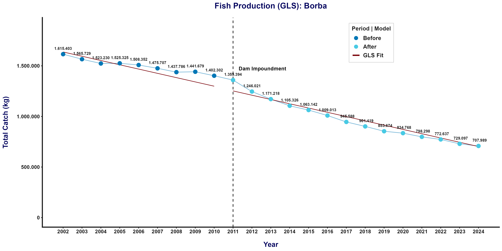

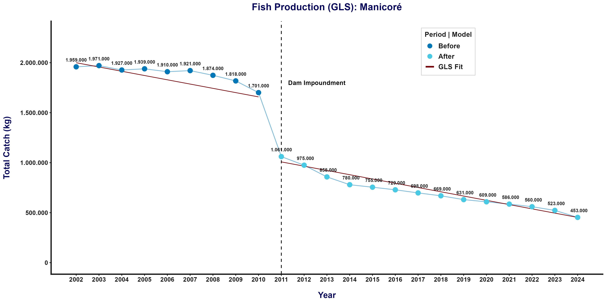

2.3 Mapa: Comparativo das Taxas de Declínio Produtivo com Estudos Prévios

Comentários: A distribuição espacial apresentada na Figura 3 evidencia diferentes magnitudes de declínio entre as localidades avaliadas ao longo da calha do Rio Madeira, revelando um aumento na magnitude das reduções e indicando que essa distribuição deve ser interpretada com cautela, pois os percentuais são provenientes de diferentes estudos e não representam necessariamente o mesmo indicador. Em Porto Velho (RO), Arantes et al. (2021) reportaram redução de 37,0% na Captura por Unidade de Esforço (CPUE), indicador que relaciona a quantidade capturada ao esforço de pesca empregado, enquanto em Humaitá (AM), Santos et al. (2018) observaram redução de 39,0% na produção pesqueira média anual. Para as localidades analisadas neste estudo, as reduções estimadas a partir da produção pesqueira média anual nos períodos antes e depois do barramento foram de 62,7% em Manicoré e 35,7% em Borba.
2.4 Composição das Capturas: Análise Descritiva
Esta etapa possui caráter estritamente descritivo e busca caracterizar as alterações observadas na composição das capturas pesqueiras entre os períodos (Antes) e (Depois). Para cada espécie, foram consideradas a variação percentual da captura média anual e sua participação média relativa na produção pesqueira total de cada município. A mudança na participação foi expressa em pontos percentuais (p.p.), permitindo identificar as espécies que ganharam ou perderam representatividade na composição das capturas, independentemente das alterações observadas em sua captura absoluta.
Essas medidas permitem dimensionar as alterações na estrutura das capturas, mas, isoladamente, não estabelecem significância estatística nem causalidade. A avaliação inferencial será realizada posteriormente, considerando também a possível presença de tendência temporal e autocorrelação nas séries anuais das espécies.
| Município | Espécie | Variação da Captura (%) |
Participação Média Antes (%) |
Participação Média Depois (%) |
Mudança na Participação (p.p.) |
|---|---|---|---|---|---|
| Borba | Filhote | −50,43 | 9,41 | 7,01 | −2,40 |
| Dourada | −19,68 | 7,01 | 8,92 | +1,91 | |
| Sardinha | −20,58 | 6,66 | 8,39 | +1,73 | |
| Jaraqui | −42,37 | 11,48 | 10,30 | −1,18 | |
| Pirarara | −21,44 | 4,05 | 5,00 | +0,95 | |
| Tambaqui | −58,84 | 2,26 | 1,37 | −0,89 | |
| Curimatã | −29,97 | 10,81 | 11,70 | +0,89 | |
| Pirapitinga | −57,95 | 2,23 | 1,38 | −0,85 | |
| Pacu | −39,50 | 10,10 | 9,74 | −0,36 | |
| Carauaçu | −47,04 | 1,60 | 1,30 | −0,31 | |
| Branquinha | −33,24 | 7,99 | 8,29 | +0,30 | |
| Surubim | −32,04 | 6,99 | 7,28 | +0,29 | |
| Cara branco | −41,70 | 2,88 | 2,61 | −0,27 | |
| Caparari | −33,37 | 6,48 | 6,69 | +0,22 | |
| Tucunaré | −45,71 | 0,91 | 0,76 | −0,15 | |
| Matrinxã | −36,84 | 7,52 | 7,38 | −0,14 | |
| Piranambu/Barbado | −14,14 | 0,37 | 0,50 | +0,13 | |
| Aracu | −27,32 | 0,78 | 0,88 | +0,10 | |
| Pescada | −32,26 | 0,49 | 0,52 | +0,04 | |
| Manicoré | Dourada | −39,23 | 5,60 | 9,22 | +3,62 |
| Sardinha | −57,04 | 9,99 | 11,60 | +1,61 | |
| Branquinha | −69,81 | 6,19 | 4,87 | −1,32 | |
| Surubim | −69,65 | 5,80 | 4,58 | −1,23 | |
| Pacu | −60,67 | 12,30 | 13,20 | +0,90 | |
| Caparari | −67,95 | 5,91 | 5,01 | −0,90 | |
| Tambaqui | −74,78 | 2,41 | 1,62 | −0,79 | |
| Pirapitinga | −72,89 | 1,95 | 1,40 | −0,55 | |
| Tucunaré | −73,34 | 1,68 | 1,19 | −0,50 | |
| Cara branco | −73,97 | 1,42 | 0,98 | −0,44 | |
| Matrinxã | −64,91 | 6,29 | 5,89 | −0,40 | |
| Carauaçu | −70,40 | 1,26 | 1,00 | −0,26 | |
| Filhote | −61,08 | 5,99 | 6,17 | +0,18 | |
| Aracu | −56,31 | 0,75 | 0,91 | +0,16 | |
| Pirarara | −63,03 | 6,07 | 5,92 | −0,15 | |
| Curimatã | −62,53 | 13,34 | 13,39 | +0,04 | |
| Jaraqui | −62,75 | 12,41 | 12,43 | +0,02 | |
| Pescada | −63,43 | 0,64 | 0,64 | +0,00 |
Notas: Antes = 2002–2010 (\(n=9\) anos) | Depois = 2011–2024 (\(n=14\) anos) | Variação da Captura = \([(\bar{P}_{Depois}-\bar{P}_{Antes})/\bar{P}_{Antes}]\times100\), em que valores negativos representam redução da captura média anual e valores positivos representam aumento | Participação Média = média das participações relativas anuais da espécie na produção pesqueira total de cada município | Mudança na Participação = Participação Média (Depois) − Participação Média (Antes), expressa em pontos percentuais (p.p.) | Valores positivos indicam ganho de participação relativa e valores negativos indicam perda de participação relativa.
Comentários: Conforme a Tabela 5, todas as espécies apresentaram redução da captura média anual entre os períodos, embora em diferentes magnitudes. Como essas reduções não ocorreram de forma proporcional, também foram observadas alterações na participação relativa das espécies na composição das capturas.
Em Borba, as maiores perdas de participação foram observadas para Filhote (\(-2,40\) p.p.) e Jaraqui (\(-1,18\) p.p.), enquanto Dourada (\(+1,91\) p.p.) e Sardinha (\(+1,73\) p.p.) apresentaram os maiores ganhos. Assim, mesmo apresentando redução da captura média anual, algumas espécies passaram a representar parcela maior da produção total por apresentarem reduções proporcionalmente menores que as demais.
Em Manicoré, as alterações foram mais acentuadas. Dourada apresentou o maior ganho de participação (\(+3,62\) p.p.), seguida de Sardinha (\(+1,61\) p.p.) e Pacu (\(+0,90\) p.p.). Em sentido contrário, as maiores perdas ocorreram para Branquinha (\(-1,32\) p.p.), Surubim (\(-1,23\) p.p.) e Caparari (\(-0,90\) p.p.). Esses resultados evidenciam uma redistribuição da representatividade das espécies na composição das capturas entre os períodos.
2.5 Composição das Capturas: Boxplots
Como complemento à análise descritiva, as Figuras Figura 4 e Figura 5 apresentam a distribuição das capturas anuais de cada espécie nos períodos (Antes) e (Depois). Os boxplots permitem visualizar diferenças na posição central, na dispersão e na ocorrência de valores discrepantes entre os períodos. O eixo vertical foi apresentado em escala logarítmica devido às diferentes magnitudes de captura entre as espécies.

EN: Distribution of annual catch (kg, logarithmic scale) by species in Borba, comparing the (Before) period (2002–2010; \(n=9\) years; dark blue) and the (After) period (2011–2024; \(n=14\) years; light blue). Boxes represent the interquartile range, the horizontal line inside each box indicates the median, whiskers extend to values within 1.5 times the interquartile range, and points represent outliers. The figure is descriptive.

EN: Distribution of annual catch (kg, logarithmic scale) by species in Manicoré, comparing the (Before) period (2002–2010; \(n=9\) years; dark blue) and the (After) period (2011–2024; \(n=14\) years; light blue). Boxes represent the interquartile range, the horizontal line inside each box indicates the median, whiskers extend to values within 1.5 times the interquartile range, and points represent outliers. The figure is descriptive.
Comentários: As Figuras Figura 4 e Figura 5 mostram que, para grande parte das espécies, as distribuições das capturas anuais se encontram em níveis inferiores no período (Depois). Esse padrão é visualmente mais acentuado em Manicoré, enquanto em Borba algumas espécies apresentam maior sobreposição entre as distribuições dos dois períodos.
Os gráficos também evidenciam diferenças na dispersão interanual das capturas e a presença de valores discrepantes em determinadas espécies. Como os boxplots representam a captura absoluta em kg, sua função nesta etapa é descritiva. A avaliação inferencial das alterações na composição foi realizada a partir da participação relativa anual das espécies, considerando também a tendência temporal e a possível autocorrelação das observações.
2.6 Composição das Capturas: Modelo de Mínimos Quadrados Generalizados (GLS)
Após a análise descritiva da composição das capturas, avaliou-se se a participação relativa anual de cada espécie apresentou alterações entre os períodos (Antes) e (Depois), considerando simultaneamente a tendência temporal e a possível dependência entre observações anuais sucessivas. Para cada espécie e município, foi utilizada toda a série de 2002 a 2024, tendo a participação relativa anual (%) como variável resposta.
O modelo utilizado para cada espécie \(i\) foi especificado por:
\[ participacao_{i,t} = \beta_{0i} + \beta_{1i}\,periodo\_barragemDepois_t + \beta_{2i}\,tempo_t + \varepsilon_{i,t}, \]
em que:
\[ tempo=ano-2002. \]
Nesse modelo, \(\beta_{0i}\) representa o nível esperado da participação relativa da espécie no início da série; \(\beta_{1i}\) representa a mudança adicional na participação relativa no período (Depois), em relação ao período (Antes), após considerar a tendência temporal; e \(\beta_{2i}\) representa a variação linear média da participação ao longo dos anos, expressa em pontos percentuais por ano (p.p./ano).
A independência temporal dos resíduos foi avaliada pelo teste de Durbin–Watson e pela função de autocorrelação (ACF). O teste de Durbin–Watson indicou evidência de autocorrelação em 33 das 37 séries analisadas. Para verificar a necessidade de incorporar essa dependência ao modelo, foi realizada uma comparação pelo teste da razão de verossimilhanças (LRT) entre o ajuste com erros independentes e o ajuste com estrutura autorregressiva de primeira ordem, AR(1). A estrutura AR(1) foi selecionada quando sua inclusão melhorou significativamente o ajuste (\(p<0,05\)).
Nas espécies em que a estrutura AR(1) foi selecionada, considerou-se:
\[ \varepsilon_{i,t} = \phi_i\varepsilon_{i,t-1} + u_{i,t}, \]
em que \(\phi_i\) representa a dependência residual entre anos consecutivos e \(u_{i,t}\) corresponde ao componente de erro aleatório.
A estrutura AR(1) foi selecionada em 27 das 37 séries analisadas, correspondendo a 17 das 19 espécies de Borba e 10 das 18 espécies de Manicoré. Para as demais espécies, o modelo GLS foi mantido sem estrutura autorregressiva. Os modelos finais foram estimados por máxima verossimilhança (ML).
Como não foi incluída interação entre periodo_barragem e tempo, o modelo considera uma tendência temporal linear comum aos dois períodos. Dessa forma, \(\beta_1\) representa uma mudança adicional de nível entre os períodos (Antes) e (Depois), após considerar a tendência temporal, enquanto \(\beta_2\) descreve a trajetória linear da participação relativa ao longo de toda a série.
A adequação dos modelos finais foi avaliada pelos resíduos normalizados. O teste de Shapiro–Wilk não indicou desvios de normalidade em 26 das 37 séries (\(p\geq0,05\)). Em Borba, foram observados desvios para Branquinha (\(p=0,002\)), Cara branco (\(p=0,004\)), Pacu (\(p=0,035\)), Pescada (\(p=0,002\)), Piranambu/Barbado (\(p=0,039\)), Pirarara (\(p=0,0496\)) e Sardinha (\(p=0,046\)). Em Manicoré, os desvios ocorreram para Dourada (\(p<0,001\)), Jaraqui (\(p=0,026\)), Pirarara (\(p<0,001\)) e Sardinha (\(p=0,002\)).
A inspeção dos QQ-plots indicou que esses desvios ocorreram predominantemente nas caudas das distribuições, sem evidência de inadequação generalizada dos resíduos. A ACF dos resíduos finais também não indicou persistência relevante da autocorrelação no primeiro lag.
2.6.1 Hipóteses avaliadas no modelo
Após a definição do modelo final para cada espécie, foram avaliados separadamente o efeito do período e o efeito do tempo.
2.6.1.1 Efeito do período - \(\beta_1\)
O efeito do período avalia se houve mudança adicional na participação relativa da espécie no período (Depois), após considerar a tendência temporal.
A avaliação desse parâmetro permite responder:
A participação relativa da espécie apresentou uma mudança adicional no período (Depois), além daquela explicada pela tendência temporal?
\[ H_0:\beta_1=0 \]
Não existe mudança adicional na participação relativa da espécie entre os períodos (Antes) e (Depois).
\[ H_1:\beta_1\neq0 \]
Existe mudança adicional na participação relativa da espécie entre os períodos (Antes) e (Depois).
A decisão é baseada no \(p\)-valor corrigido associado ao coeficiente. Quando \(p_{FDR}<0,05\), rejeita-se \(H_0\), indicando evidência estatística de mudança adicional na participação relativa. Quando \(p_{FDR}\geq0,05\), não há evidência estatística suficiente para identificar essa mudança.
O sinal de \(\hat{\beta}_1\) indica a direção do efeito. Valores negativos representam menor participação relativa no período (Depois), enquanto valores positivos representam maior participação. O IC95% complementa essa avaliação ao indicar a faixa de valores plausíveis para o efeito estimado. Como os intervalos apresentados são nominais e não foram corrigidos para múltiplas comparações, a decisão inferencial é baseada no \(p_{FDR}\).
2.6.1.2 Efeito do tempo - \(\beta_2\)
O efeito do tempo avalia se a participação relativa da espécie apresenta uma tendência linear ao longo dos anos.
A avaliação desse parâmetro permite responder:
A participação relativa da espécie apresenta uma trajetória linear de crescimento ou redução ao longo dos anos?
\[ H_0:\beta_2=0 \]
Não existe tendência temporal linear na participação relativa da espécie ao longo dos anos.
\[ H_1:\beta_2\neq0 \]
Existe tendência temporal linear na participação relativa da espécie ao longo dos anos.
Quando \(p_{FDR}<0,05\), rejeita-se \(H_0\), indicando evidência de tendência temporal linear. Valores negativos de \(\hat{\beta}_2\) representam redução média da participação ao longo dos anos, enquanto valores positivos representam crescimento médio anual.
O IC95% de \(\beta_2\) complementa a avaliação da precisão da tendência estimada. A inclusão de tempo permite separar uma trajetória gradual da série de uma mudança específica de nível entre os períodos. Dessa forma, uma alteração progressiva na participação relativa não é automaticamente atribuída ao período (Depois).
Como foram realizados testes para múltiplas espécies, os \(p\)-valores associados a \(\beta_1\) e \(\beta_2\) foram corrigidos pelo procedimento de Benjamini–Hochberg (FDR), separadamente para cada município. Adotou-se nível de significância de 5%.
- Avalia-se o \(p_{FDR}\) de \(\beta_1\) para verificar se existe mudança adicional de participação entre os períodos (Antes) e (Depois).
- O sinal de \(\hat{\beta}_1\) indica a direção dessa mudança.
- O IC95% de \(\beta_1\) informa a precisão da estimativa.
- Avalia-se o \(p_{FDR}\) de \(\beta_2\) para verificar se existe tendência temporal linear.
- O sinal e a magnitude de \(\hat{\beta}_2\) indicam a direção e a variação média anual da participação em p.p./ano.
- O IC95% de \(\beta_2\) informa a precisão da tendência temporal estimada.
- O parâmetro \(\phi\) representa a persistência temporal residual entre anos consecutivos quando a estrutura AR(1) foi selecionada.
| Município | Espécie | DW (\(p\)) | Modelo final | Efeito do período \(\hat{\beta}_1\) (IC95%; p.p.) |
Teste de \(\beta_1\) \(t\) (\(p_{FDR}\)) |
Efeito do tempo \(\hat{\beta}_2\) (IC95%; p.p./ano) |
Teste de \(\beta_2\) \(t\) (\(p_{FDR}\)) |
\(\phi\) |
|---|---|---|---|---|---|---|---|---|
| Borba | Aracu | 0,804 (<0,001) | GLS + AR(1) | 0,016 [−0,082; 0,114] | 0,34 (0,841) | 0,004 [−0,005; 0,014] | 0,97 (0,434) | 0,726 |
| Branquinha | 0,467 (<0,001) | GLS + AR(1) | 0,113 [−0,540; 0,766] | 0,36 (0,841) | 0,057 [−0,015; 0,128] | 1,64 (0,169) | 0,815 | |
| Caparari | 1,632 (0,090) | GLS | 0,366 [−0,053; 0,785] | 1,82 (0,793) | −0,013 [−0,044; 0,018] | −0,88 (0,460) | — | |
| Cara branco | 0,700 (<0,001) | GLS + AR(1) | −0,023 [−0,277; 0,232] | −0,19 (0,854) | −0,022 [−0,044; −0,000] | −2,10 (0,084) | 0,646 | |
| Carauaçu | 0,917 (<0,001) | GLS + AR(1) | −0,027 [−0,211; 0,158] | −0,30 (0,841) | −0,023 [−0,037; −0,008] | −3,21 (0,010) | 0,540 | |
| Curimatã | 0,988 (<0,001) | GLS + AR(1) | 0,506 [−0,374; 1,386] | 1,20 (0,841) | 0,019 [−0,058; 0,095] | 0,51 (0,618) | 0,655 | |
| Dourada | 0,499 (<0,001) | GLS + AR(1) | −0,676 [−1,190; −0,161] | −2,74 (0,239) | 0,185 [0,125; 0,245] | 6,46 (<0,001) | 0,838 | |
| Filhote | 0,444 (<0,001) | GLS + AR(1) | −0,216 [−1,172; 0,741] | −0,47 (0,841) | −0,167 [−0,271; −0,062] | −3,33 (0,009) | 0,811 | |
| Jaraqui | 0,880 (<0,001) | GLS + AR(1) | −0,106 [−0,958; 0,745] | −0,26 (0,841) | −0,072 [−0,150; 0,006] | −1,92 (0,109) | 0,703 | |
| Matrinxã | 0,939 (<0,001) | GLS + AR(1) | 0,150 [−0,377; 0,676] | 0,59 (0,841) | −0,017 [−0,062; 0,029] | −0,76 (0,481) | 0,647 | |
| Pacu | 0,626 (<0,001) | GLS + AR(1) | −0,234 [−1,258; 0,790] | −0,48 (0,841) | 0,059 [−0,095; 0,213] | 0,80 (0,481) | 0,921 | |
| Pescada | 0,434 (<0,001) | GLS + AR(1) | −0,032 [−0,078; 0,014] | −1,44 (0,841) | 0,006 [0,001; 0,011] | 2,30 (0,062) | 0,842 | |
| Piranambu/Barbado | 1,009 (0,001) | GLS + AR(1) | −0,015 [−0,086; 0,056] | −0,44 (0,841) | 0,011 [0,006; 0,017] | 4,27 (0,001) | 0,519 | |
| Pirapitinga | 0,702 (<0,001) | GLS + AR(1) | −0,186 [−0,581; 0,209] | −0,98 (0,841) | −0,075 [−0,120; −0,030] | −3,46 (0,008) | 0,832 | |
| Pirarara | 1,079 (0,002) | GLS + AR(1) | 0,105 [−0,088; 0,298] | 1,13 (0,841) | 0,072 [0,057; 0,087] | 10,13 (<0,001) | 0,444 | |
| Sardinha | 0,393 (<0,001) | GLS + AR(1) | 0,096 [−0,542; 0,735] | 0,31 (0,841) | 0,103 [0,026; 0,180] | 2,78 (0,024) | 0,854 | |
| Surubim | 0,535 (<0,001) | GLS + AR(1) | 0,276 [−0,280; 0,832] | 1,03 (0,841) | −0,047 [−0,133; 0,039] | −1,15 (0,360) | 0,929 | |
| Tambaqui | 1,026 (0,001) | GLS + AR(1) | 0,149 [−0,264; 0,563] | 0,75 (0,841) | −0,091 [−0,124; −0,059] | −5,94 (<0,001) | 0,468 | |
| Tucunaré | 1,262 (0,010) | GLS | 0,019 [−0,042; 0,080] | 0,66 (0,841) | −0,015 [−0,019; −0,011] | −7,00 (<0,001) | — | |
| Manicoré | Aracu | 1,493 (0,044) | GLS | −0,083 [−0,260; 0,095] | −0,97 (0,420) | 0,021 [0,008; 0,034] | 3,31 (0,008) | — |
| Branquinha | 0,540 (<0,001) | GLS + AR(1) | −0,591 [−1,062; −0,120] | −2,62 (0,030) | −0,071 [−0,125; −0,017] | −2,75 (0,022) | 0,832 | |
| Caparari | 0,562 (<0,001) | GLS + AR(1) | −0,524 [−0,894; −0,153] | −2,95 (0,018) | −0,034 [−0,070; 0,002] | −1,97 (0,087) | 0,751 | |
| Cara branco | 1,230 (0,008) | GLS | −0,180 [−0,318; −0,041] | −2,71 (0,027) | −0,023 [−0,033; −0,012] | −4,62 (<0,001) | — | |
| Carauaçu | 2,104 (0,432) | GLS | −0,267 [−0,355; −0,179] | −6,34 (<0,001) | 0,000 [−0,006; 0,007] | 0,14 (0,891) | — | |
| Curimatã | 0,796 (<0,001) | GLS + AR(1) | −0,204 [−0,964; 0,555] | −0,56 (0,615) | 0,051 [−0,017; 0,120] | 1,56 (0,173) | 0,691 | |
| Dourada | 1,507 (0,048) | GLS | 2,548 [1,996; 3,099] | 9,63 (<0,001) | 0,093 [0,053; 0,134] | 4,79 (<0,001) | — | |
| Filhote | 0,753 (<0,001) | GLS + AR(1) | 0,708 [0,361; 1,056] | 4,25 (0,002) | −0,056 [−0,091; −0,022] | −3,42 (0,007) | 0,760 | |
| Jaraqui | 0,947 (<0,001) | GLS + AR(1) | 0,530 [−0,397; 1,456] | 1,19 (0,342) | −0,024 [−0,101; 0,054] | −0,63 (0,600) | 0,615 | |
| Matrinxã | 1,156 (0,004) | GLS + AR(1) | −0,934 [−1,569; −0,300] | −3,07 (0,018) | 0,010 [−0,053; 0,074] | 0,35 (0,776) | 0,761 | |
| Pacu | 0,648 (<0,001) | GLS + AR(1) | −1,842 [−2,572; −1,111] | −5,26 (<0,001) | 0,228 [0,162; 0,294] | 7,23 (<0,001) | 0,692 | |
| Pescada | 1,259 (0,010) | GLS | −0,062 [−0,197; 0,073] | −0,96 (0,420) | 0,005 [−0,004; 0,015] | 1,14 (0,319) | — | |
| Pirapitinga | 1,212 (0,007) | GLS | −0,181 [−0,421; 0,059] | −1,57 (0,198) | −0,032 [−0,050; −0,014] | −3,79 (0,004) | — | |
| Pirarara | 1,738 (0,141) | GLS | 0,773 [0,105; 1,441] | 2,41 (0,042) | −0,081 [−0,130; −0,031] | −3,42 (0,007) | — | |
| Sardinha | 1,089 (0,002) | GLS + AR(1) | 0,935 [0,329; 1,540] | 3,22 (0,015) | 0,085 [0,030; 0,141] | 3,22 (0,009) | 0,704 | |
| Surubim | 0,687 (<0,001) | GLS + AR(1) | −0,210 [−0,753; 0,333] | −0,81 (0,483) | −0,103 [−0,155; −0,052] | −4,17 (0,002) | 0,735 | |
| Tambaqui | 1,265 (0,010) | GLS + AR(1) | 0,088 [−0,572; 0,748] | 0,28 (0,784) | −0,058 [−0,112; −0,004] | −2,22 (0,057) | 0,581 | |
| Tucunaré | 2,069 (0,399) | GLS | −0,302 [−0,515; −0,088] | −2,94 (0,018) | −0,017 [−0,033; −0,001] | −2,26 (0,057) | — |
Notas: DW = estatística de Durbin–Watson obtida a partir do modelo inicial contendo período e tempo | GLS + AR(1) = modelo com estrutura autorregressiva de primeira ordem selecionada pelo LRT | \(\hat{\beta}_1\) = efeito do período, correspondente à mudança adicional da participação relativa em (Depois), em pontos percentuais (p.p.) | \(\hat{\beta}_2\) = efeito do tempo, correspondente à variação linear média da participação relativa em pontos percentuais por ano (p.p./ano) | IC95% = intervalo de confiança nominal de 95% | \(t\) = estatística do teste do coeficiente | \(p_{FDR}\) = \(p\)-valor corrigido pelo procedimento de Benjamini–Hochberg | \(\phi\) = parâmetro de autocorrelação de primeira ordem | — = estrutura AR(1) não selecionada pelo LRT.
Comentários: Conforme a Tabela 6, os efeitos do período e do tempo apresentaram comportamentos distintos entre os municípios. O coeficiente \(\hat{\beta}_1\) indica se houve uma mudança adicional na participação relativa da espécie no período (Depois), após considerar a tendência temporal, enquanto \(\hat{\beta}_2\) representa a variação gradual dessa participação ao longo dos anos.
Em Borba, nenhuma das 19 espécies apresentou efeito significativo do período para \(\beta_1\) após a correção por FDR (\(p_{FDR}\geq0,05\)). Portanto, embora a análise descritiva tenha mostrado ganhos e perdas de participação entre os períodos, essas diferenças não foram identificadas pelo modelo como mudanças adicionais de nível após considerar a tendência temporal.
Por outro lado, nove espécies de Borba apresentaram efeito significativo do tempo. Dourada (\(\hat{\beta}_2=0,185\) p.p./ano; \(p_{FDR}<0,001\)), Piranambu/Barbado (\(0,011\) p.p./ano; \(p_{FDR}=0,001\)), Pirarara (\(0,072\) p.p./ano; \(p_{FDR}<0,001\)) e Sardinha (\(0,103\) p.p./ano; \(p_{FDR}=0,024\)) apresentaram aumento gradual de participação ao longo dos anos. Em sentido contrário, Carauaçu (\(\hat{\beta}_2=-0,023\) p.p./ano; \(p_{FDR}=0,010\)), Filhote (\(-0,167\); \(p_{FDR}=0,009\)), Pirapitinga (\(-0,075\); \(p_{FDR}=0,008\)), Tambaqui (\(-0,091\); \(p_{FDR}<0,001\)) e Tucunaré (\(-0,015\); \(p_{FDR}<0,001\)) apresentaram redução gradual. Assim, em Borba, as alterações identificadas pelo modelo estiveram principalmente relacionadas à trajetória temporal das espécies.
Em Manicoré, o efeito do período foi significativo para 11 das 18 espécies. Sete apresentaram redução adicional de participação no período (Depois): Branquinha (\(\hat{\beta}_1=-0,591\) p.p.; \(p_{FDR}=0,030\)), Caparari (\(-0,524\); \(p_{FDR}=0,018\)), Cara branco (\(-0,180\); \(p_{FDR}=0,027\)), Carauaçu (\(-0,267\); \(p_{FDR}<0,001\)), Matrinxã (\(-0,934\); \(p_{FDR}=0,018\)), Pacu (\(-1,842\); \(p_{FDR}<0,001\)) e Tucunaré (\(-0,302\); \(p_{FDR}=0,018\)). Entre essas espécies, Pacu apresentou a maior redução estimada, correspondente a aproximadamente \(1,84\) p.p.
Em sentido contrário, quatro espécies apresentaram aumento adicional de participação no período (Depois): Dourada (\(\hat{\beta}_1=2,548\) p.p.; \(p_{FDR}<0,001\)), Filhote (\(0,708\); \(p_{FDR}=0,002\)), Pirarara (\(0,773\); \(p_{FDR}=0,042\)) e Sardinha (\(0,935\); \(p_{FDR}=0,015\)). Dourada apresentou o maior aumento estimado, correspondente a aproximadamente \(2,55\) p.p. Esses resultados mostram que a alteração na composição de Manicoré não ocorreu de forma uniforme entre as espécies, havendo simultaneamente ganhos e perdas de participação relativa.
O efeito do tempo também foi significativo para dez espécies de Manicoré. Aracu (\(\hat{\beta}_2=0,021\) p.p./ano; \(p_{FDR}=0,008\)), Dourada (\(0,093\); \(p_{FDR}<0,001\)), Pacu (\(0,228\); \(p_{FDR}<0,001\)) e Sardinha (\(0,085\); \(p_{FDR}=0,009\)) apresentaram tendência crescente. Branquinha (\(\hat{\beta}_2=-0,071\) p.p./ano; \(p_{FDR}=0,022\)), Cara branco (\(-0,023\); \(p_{FDR}<0,001\)), Filhote (\(-0,056\); \(p_{FDR}=0,007\)), Pirapitinga (\(-0,032\); \(p_{FDR}=0,004\)), Pirarara (\(-0,081\); \(p_{FDR}=0,007\)) e Surubim (\(-0,103\); \(p_{FDR}=0,002\)) apresentaram tendência decrescente.
Os efeitos de período e tempo devem ser interpretados conjuntamente, pois representam componentes diferentes da mudança na composição. Em Manicoré, Pacu, por exemplo, apresentou redução adicional de \(1,842\) p.p. no período (Depois), mas tendência temporal crescente de \(0,228\) p.p./ano. Filhote apresentou comportamento distinto, com aumento adicional de \(0,708\) p.p. no período (Depois), acompanhado por tendência temporal decrescente de \(0,056\) p.p./ano. Dessa forma, uma diferença de nível entre os períodos não implica necessariamente que a espécie tenha mantido a mesma direção de mudança ao longo de toda a série.
De forma geral, em Borba as alterações na composição estiveram predominantemente associadas a tendências graduais na participação relativa das espécies ao longo dos anos, sem evidência de mudança adicional entre os períodos após o ajuste temporal. Em Manicoré, foram observadas tanto mudanças adicionais de participação no período (Depois) quanto tendências temporais, indicando uma reorganização mais evidente da participação relativa das espécies na composição das capturas.
2.7 Diversidade das Capturas: Análise Descritiva
A diversidade das capturas foi avaliada anualmente por meio da riqueza de espécies (\(S\)) e do índice de diversidade de Shannon (\(H'\)), considerando separadamente os municípios de Borba e Manicoré no período de 2002 a 2024. A riqueza corresponde ao número de espécies registradas nas capturas em cada ano, enquanto o índice de Shannon considera simultaneamente o número de espécies e a distribuição relativa das capturas entre elas.
Esta etapa possui caráter estritamente descritivo e busca caracterizar as alterações observadas na diversidade das capturas entre os períodos (Antes) e (Depois). As medidas foram resumidas por município e período, considerando média, desvio-padrão, mediana e amplitude observada.
| Município | Período | n | Riqueza Média | Riqueza Mín.–Máx. |
Shannon Médio | DP | Mediana | Shannon Mín.–Máx. |
|---|---|---|---|---|---|---|---|---|
| Borba | Antes | 9 | 19,00 | 19–19 | 2,664 | 0,002 | 2,665 | 2,659–2,666 |
| Depois | 14 | 19,00 | 19–19 | 2,638 | 0,023 | 2,647 | 2,594–2,661 | |
| Manicoré | Antes | 9 | 18,00 | 18–18 | 2,613 | 0,014 | 2,617 | 2,581–2,628 |
| Depois | 14 | 18,00 | 18–18 | 2,552 | 0,024 | 2,559 | 2,505–2,579 |
Notas: Antes = 2002–2010 (\(n=9\) anos) | Depois = 2011–2024 (\(n=14\) anos) | \(S\) = riqueza de espécies | \(H'\) = índice de diversidade de Shannon | DP = desvio-padrão | Mín. = valor mínimo | Máx. = valor máximo.
Comentários: Conforme a Tabela 7, a riqueza permaneceu constante ao longo de toda a série analisada. Em Borba, foram registradas 19 espécies em todos os anos entre 2002 e 2024, enquanto em Manicoré foram registradas 18 espécies. Dessa forma, não foram observadas alterações no número de espécies registradas entre os períodos (Antes) e (Depois).
O índice de Shannon, entretanto, apresentou redução nos dois municípios. Em Borba, o valor médio passou de 2,664 no período (Antes) para 2,638 no período (Depois), correspondendo a uma diferença de aproximadamente \(-0,026\). Em Manicoré, a média passou de 2,613 para 2,552, representando uma diferença de aproximadamente \(-0,061\).
Também foi observado aumento da variabilidade do índice no período (Depois). Em Borba, o desvio-padrão passou de 0,002 para 0,023, enquanto em Manicoré aumentou de 0,014 para 0,024. Os menores valores anuais de Shannon também foram registrados no período (Depois), atingindo 2,594 em Borba e 2,505 em Manicoré.
Como a riqueza permaneceu constante, as alterações observadas no índice de Shannon estão relacionadas à distribuição relativa das capturas entre as espécies, e não à redução do número de espécies registradas. Por não apresentar variação anual, a riqueza foi mantida apenas na análise descritiva, enquanto a avaliação inferencial da diversidade foi concentrada no índice de Shannon.
2.8 Diversidade das Capturas: Comportamento Temporal
Como complemento à análise descritiva, a Figura Figura 6 apresenta a evolução anual do índice de Shannon em Borba e Manicoré entre 2002 e 2024. A representação temporal permite visualizar o comportamento da diversidade ao longo dos anos e sua distribuição entre os períodos (Antes) e (Depois).
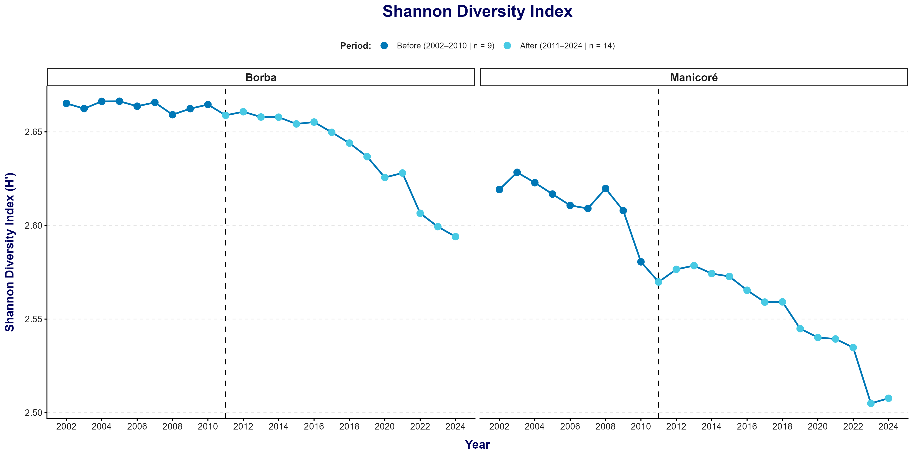
EN: Annual evolution of the Shannon diversity index (\(H'\)) of fish catches in Borba and Manicoré from 2002 to 2024. Colors distinguish the (Before) period (2002–2010; \(n=9\) years) and the (After) period (2011–2024; \(n=14\) years), while the dashed vertical line indicates the beginning of the (After) period in 2011. Lower \(H'\) values indicate lower evenness in the relative distribution of catches among species.

Comentários: Conforme a Figura 6, observa-se uma trajetória predominantemente decrescente do índice de Shannon nos dois municípios. Em Borba, os valores permaneceram relativamente estáveis nos primeiros anos da série, seguidos por uma redução mais evidente nos anos posteriores. Em Manicoré, a redução foi mais acentuada ao longo do período analisado.
A representação gráfica não evidencia uma mudança isolada exatamente em 2011, mas uma redução que se desenvolve progressivamente ao longo dos anos. Dessa forma, a avaliação inferencial considerou simultaneamente uma possível mudança entre os períodos e a tendência temporal da diversidade.
2.9 Diversidade das Capturas: Modelo de Mínimos Quadrados Generalizados (GLS)
Para avaliar as alterações no índice de Shannon ao longo da série, foi ajustado, separadamente para cada município, um modelo contendo o período de operação das UHEs e uma variável temporal contínua:
\[ H'_t = \beta_0 + \beta_1\,periodo\_barragemDepois_t + \beta_2\,tempo_t + \varepsilon_t, \]
em que:
\[ tempo=ano-2002. \]
Nesse modelo, \(\beta_0\) representa o valor esperado do índice de Shannon no início da série; \(\beta_1\) representa uma mudança adicional no índice no período (Depois), após considerar a tendência temporal; e \(\beta_2\) representa sua variação linear média ao longo dos anos.
A independência temporal dos resíduos foi inicialmente avaliada pelo teste de Durbin–Watson e pela função de autocorrelação (ACF). O teste de Durbin–Watson indicou evidência de autocorrelação em Borba (\(DW=0,628\); \(p<0,001\)) e Manicoré (\(DW=1,140\); \(p=0,004\)).
Para verificar a necessidade de incorporar essa dependência ao modelo, foi realizada uma comparação pelo teste da razão de verossimilhanças (LRT) entre o ajuste com erros independentes e o ajuste com estrutura autorregressiva de primeira ordem, AR(1). Os modelos foram estimados por máxima verossimilhança (ML), sendo a estrutura AR(1) selecionada quando sua inclusão melhorou significativamente o ajuste (\(p<0,05\)).
Em Borba, a estrutura AR(1) apresentou melhora significativa no ajuste (\(LR=23,363\); \(p<0,001\)), sendo selecionado o modelo GLS + AR(1), com \(\phi=0,912\). Esse valor indica forte dependência temporal de primeira ordem, considerada na estrutura residual do modelo.
Para Borba, portanto, considerou-se:
\[ \varepsilon_t = \phi\varepsilon_{t-1} + u_t. \]
Em Manicoré, apesar da evidência inicial de autocorrelação pelo teste de Durbin–Watson, a inclusão da estrutura AR(1) não melhorou significativamente o ajuste pelo LRT (\(LR=3,414\); \(p=0,065\)). Dessa forma, foi mantido o modelo GLS com erros independentes.
A adequação dos modelos finais foi avaliada a partir dos resíduos normalizados. A ACF dos resíduos finais não indicou autocorrelação residual relevante em nenhum dos municípios, com autocorrelação de primeira ordem igual a 0,029 em Borba e 0,341 em Manicoré. Quanto à normalidade, o teste de Shapiro–Wilk não indicou desvio em Manicoré (\(W=0,944\); \(p=0,215\)). Em Borba, entretanto, foi observada evidência de desvio da normalidade (\(W=0,866\); \(p=0,005\)), também identificada pela inspeção do QQ-plot principalmente nas extremidades da distribuição. Esse desvio deve ser considerado na interpretação dos resultados inferenciais para o município.
2.9.1 Hipóteses avaliadas no modelo
2.9.1.1 Efeito do período - \(\beta_1\)
O efeito do período avalia se houve uma mudança adicional no índice de Shannon no período (Depois), após considerar a tendência temporal.
O índice de diversidade de Shannon apresentou uma mudança adicional no período (Depois), além daquela explicada pela tendência temporal?
\[ H_0:\beta_1=0 \]
Não existe mudança adicional no índice de Shannon entre os períodos (Antes) e (Depois), após considerar a tendência temporal.
\[ H_1:\beta_1\neq0 \]
Existe mudança adicional no índice de Shannon entre os períodos (Antes) e (Depois), após considerar a tendência temporal.
Quando \(p<0,05\), rejeita-se \(H_0\), indicando evidência estatística de mudança adicional no índice de Shannon no período (Depois). O sinal de \(\hat{\beta}_1\) indica a direção dessa mudança.
2.9.1.2 Efeito do tempo - \(\beta_2\)
O efeito do tempo avalia se o índice de Shannon apresenta uma trajetória linear ao longo dos anos.
O índice de diversidade de Shannon apresenta uma trajetória linear de crescimento ou redução ao longo dos anos?
\[ H_0:\beta_2=0 \]
Não existe tendência temporal linear no índice de Shannon.
\[ H_1:\beta_2\neq0 \]
Existe tendência temporal linear no índice de Shannon.
Quando \(p<0,05\), rejeita-se \(H_0\), indicando evidência de tendência temporal linear. Valores negativos de \(\hat{\beta}_2\) representam redução média do índice ao longo dos anos, enquanto valores positivos representam aumento.
A inclusão simultânea de período e tempo permite distinguir uma mudança adicional associada ao período (Depois) de uma trajetória gradual presente ao longo da série.
| Município | DW (\(p\)) | LRT (\(p\)) | Modelo final | Efeito do período \(\hat{\beta}_1\) (IC95%) |
\(t\) (\(p\)) | Efeito do tempo \(\hat{\beta}_2\) (IC95%; ano\(^{-1}\)) |
\(t\) (\(p\)) | \(\phi\) |
|---|---|---|---|---|---|---|---|---|
| Borba | 0,628 (<0,001) | 23,363 (<0,001) | GLS + AR(1) | −0,00205 [−0,0151; 0,0110] | −0,33 (0,747) | −0,00307 [−0,00496; −0,00118] | −3,38 (0,003) | 0,912 |
| Manicoré | 1,140 (0,004) | 3,414 (0,065) | GLS | −0,00249 [−0,0183; 0,0133] | −0,33 (0,746) | −0,00507 [−0,00624; −0,00391] | −9,11 (<0,001) | — |
Notas: DW = estatística de Durbin–Watson obtida a partir do modelo inicial contendo período e tempo | LRT = teste da razão de verossimilhanças utilizado para comparar os ajustes com erros independentes e com estrutura AR(1) | GLS + AR(1) = modelo com estrutura autorregressiva de primeira ordem | \(\hat{\beta}_1\) = mudança adicional no índice de Shannon no período (Depois), após considerar a tendência temporal | \(\hat{\beta}_2\) = variação linear média do índice de Shannon por ano | IC95% = intervalo de confiança nominal de 95% | \(\phi\) = parâmetro de autocorrelação de primeira ordem | — = estrutura AR(1) não selecionada pelo LRT.
Comentários: Conforme a Tabela 8, o efeito do período (\(\beta_1\)) verifica se houve uma mudança no índice de Shannon no período (Depois), além da variação que já vinha ocorrendo ao longo dos anos. Para Borba (\(p=0,747\)) e Manicoré (\(p=0,746\)), esse efeito não foi significativo. Portanto, não foi observada uma mudança adicional no índice de Shannon entre os períodos (Antes) e (Depois) após considerar o efeito do tempo.
O efeito do tempo (\(\beta_2\)) verifica se o índice de Shannon apresenta aumento ou redução ao longo dos anos. Esse efeito foi significativo nos dois municípios. Em Borba, o índice apresentou redução média de aproximadamente \(0,003\) unidade por ano (\(\hat{\beta}_2=-0,00307\); \(p=0,003\)). Em Manicoré, a redução foi maior, de aproximadamente \(0,005\) unidade por ano (\(\hat{\beta}_2=-0,00507\); \(p<0,001\)).
Assim, a análise mostra que o índice de Shannon vem diminuindo gradualmente ao longo dos anos nos dois municípios, com redução mais acentuada em Manicoré. Embora os valores médios tenham sido menores no período (Depois), o modelo não identificou uma mudança adicional específica desse período.
Em conjunto com a análise descritiva, observa-se que a riqueza permaneceu constante em 19 espécies em Borba e 18 em Manicoré, enquanto o índice de Shannon diminuiu. Isso indica que a principal mudança observada não foi no número de espécies registradas, mas na forma como as capturas passaram a se distribuir entre elas ao longo dos anos.
3 Variáveis hidrológicas
Objetivo: Correlacionar a produção pesqueira com as variáveis hidrológicas, considerando as possíveis alterações associadas à operação das UHEs.
3.1 Variáveis Hidrológicas: Análise Descritiva
As condições hidrológicas do rio Madeira foram caracterizadas a partir das cotas média, mínima e máxima anuais, além da amplitude anual, calculada pela diferença entre a cota máxima e a cota mínima de cada ano. As medidas foram obtidas separadamente para Borba e Manicoré, considerando os períodos (Antes), de 2002 a 2010, e (Depois), de 2011 a 2024.
Para reduzir a influência de valores extremos, os resultados foram resumidos pela mediana e pelo intervalo interquartil (Q1–Q3). Assim, esta etapa possui caráter descritivo e permite comparar o comportamento das medidas hidrológicas entre os dois períodos.
| Município | Período | n | Cota média anual | Cota mínima anual | Cota máxima anual | Amplitude anual |
|---|---|---|---|---|---|---|
| Borba | Antes | 9 | 1.574,2 [1.540,8–1.620,2] | 905,0 [790,0–1.008,0] | 2.028,0 [2.015,0–2.134,0] | 1.184,0 [1.047,0–1.235,0] |
| Depois | 14 | 1.600,4 [1.549,0–1.656,6] | 919,0 [843,5–990,8] | 2.123,0 [2.065,2–2.147,0] | 1.211,0 [1.175,2–1.224,5] | |
| Manicoré | Antes | 9 | 1.863,7 [1.791,6–1.931,5] | 1.197,0 [1.136,0–1.212,0] | 2.517,0 [2.460,0–2.580,0] | 1.298,0 [1.268,0–1.383,0] |
| Depois | 14 | 1.928,3 [1.880,5–2.027,1] | 1.221,5 [1.162,5–1.289,0] | 2.585,0 [2.555,5–2.653,0] | 1.366,0 [1.309,2–1.453,5] |
Notas: Antes = 2002–2010 (\(n=9\) anos) | Depois = 2011–2024 (\(n=14\) anos) | Q1 = primeiro quartil | Q3 = terceiro quartil | Amplitude anual = cota máxima anual − cota mínima anual.
Comentários: Conforme a Tabela 9, os valores centrais das medidas hidrológicas foram maiores no período (Depois) nos dois municípios. Em Borba, a mediana da cota média anual passou de 1.574,2 cm no período (Antes) para 1.600,4 cm no período (Depois). A cota mínima passou de 905,0 para 919,0 cm, enquanto a cota máxima aumentou de 2.028,0 para 2.123,0 cm.
Em Manicoré, a cota média anual passou de 1.863,7 para 1.928,3 cm. A cota mínima aumentou de 1.197,0 para 1.221,5 cm, enquanto a cota máxima passou de 2.517,0 para 2.585,0 cm. A amplitude anual também apresentou valores centrais maiores no período (Depois) nos dois municípios.
Esses resultados descrevem as diferenças observadas entre os períodos, mas não indicam, isoladamente, se essas mudanças são estatisticamente significativas.
3.2 Variáveis Hidrológicas: Variação entre os Períodos
Como complemento à análise descritiva, foi calculada a variação entre os valores medianos dos períodos (Antes) e (Depois). Para cada medida hidrológica, considerou-se:
\[ \Delta H = \widetilde{H}_{\text{Depois}} - \widetilde{H}_{\text{Antes}}, \]
em que \(\widetilde{H}_{\text{Antes}}\) e \(\widetilde{H}_{\text{Depois}}\) representam as medianas da variável hidrológica nos respectivos períodos. Valores positivos de \(\Delta H\) indicam medidas maiores no período (Depois), enquanto valores negativos indicam redução.
A variação percentual foi obtida por:
\[ \Delta H(\%) = \left( \frac{ \widetilde{H}_{\text{Depois}} - \widetilde{H}_{\text{Antes}} }{ \widetilde{H}_{\text{Antes}} } \right) \times 100. \]
| Município | Variável | Antes (cm) | Depois (cm) | \(\Delta H\) (cm) | \(\Delta H\) (%) |
|---|---|---|---|---|---|
| Borba | Cota média anual | 1.574,2 | 1.600,4 | +26,2 | +1,66 |
| Cota mínima anual | 905,0 | 919,0 | +14,0 | +1,55 | |
| Cota máxima anual | 2.028,0 | 2.123,0 | +95,0 | +4,68 | |
| Amplitude anual | 1.184,0 | 1.211,0 | +27,0 | +2,28 | |
| Manicoré | Cota média anual | 1.863,7 | 1.928,3 | +64,6 | +3,46 |
| Cota mínima anual | 1.197,0 | 1.221,5 | +24,5 | +2,05 | |
| Cota máxima anual | 2.517,0 | 2.585,0 | +68,0 | +2,70 | |
| Amplitude anual | 1.298,0 | 1.366,0 | +68,0 | +5,24 |
Notas: \(\Delta H\) = diferença entre a mediana do período (Depois) e a mediana do período (Antes) | \(\Delta H(\%)\) = variação percentual em relação ao período (Antes) | Valores positivos indicam medidas hidrológicas maiores no período (Depois).
Comentários: Conforme a Tabela 10, todas as medidas apresentaram variação positiva entre os períodos (Antes) e (Depois). Em Borba, o maior aumento relativo ocorreu na cota máxima anual, com diferença de 95,0 cm, correspondente a 4,68%. A cota média anual aumentou 26,2 cm, equivalente a 1,66%.
Em Manicoré, a cota média anual apresentou aumento de 64,6 cm, correspondente a 3,46%. A maior variação relativa foi observada na amplitude anual, que aumentou 68,0 cm, equivalente a 5,24%.
De forma geral, os resultados indicam medidas hidrológicas centrais ligeiramente maiores no período (Depois) nos dois municípios. Na etapa seguinte, foi avaliada a correlação entre as variações anuais das cotas e a produção pesqueira.
3.3 Variáveis Hidrológicas: Correlação com a Produção Pesqueira
Para avaliar a correlação entre as condições hidrológicas e a produção pesqueira, foi utilizado o coeficiente de correlação de Spearman, considerando separadamente as cotas média, mínima e máxima anuais em cada município e período. O coeficiente \(\rho\) indica a direção e a intensidade da correlação monotônica entre as variáveis.
Considerando que três medidas hidrológicas foram avaliadas em cada combinação de município e período, os valores de \(p\) também foram ajustados pelo método de Benjamini–Hochberg (BH), permitindo controlar o efeito das comparações múltiplas.
| Município | Período | Variável hidrológica | n | \(\rho\) | \(p\) | \(p_{aj}\) |
|---|---|---|---|---|---|---|
| Borba | Antes | Cota máxima anual | 9 | −0,650 | 0,058 | 0,174 |
| Cota média anual | 9 | −0,233 | 0,546 | 0,546 | ||
| Cota mínima anual | 9 | 0,550 | 0,125 | 0,187 | ||
| Depois | Cota máxima anual | 14 | 0,446 | 0,110 | 0,329 | |
| Cota média anual | 14 | 0,240 | 0,409 | 0,409 | ||
| Cota mínima anual | 14 | 0,341 | 0,233 | 0,350 | ||
| Manicoré | Antes | Cota máxima anual | 9 | −0,617 | 0,077 | 0,231 |
| Cota média anual | 9 | −0,433 | 0,244 | 0,366 | ||
| Cota mínima anual | 9 | 0,167 | 0,668 | 0,668 | ||
| Depois | Cota máxima anual | 14 | 0,095 | 0,748 | 0,748 | |
| Cota média anual | 14 | 0,332 | 0,246 | 0,370 | ||
| Cota mínima anual | 14 | 0,569 | 0,034 | 0,101 |
Notas: \(\rho\) = coeficiente de correlação de Spearman | \(p\) = valor de significância sem ajuste | \(p_{aj}\) = valor de \(p\) ajustado pelo método de Benjamini–Hochberg (BH) para as três variáveis hidrológicas avaliadas dentro de cada município e período | Antes = 2002–2010 (\(n=9\) anos) | Depois = 2011–2024 (\(n=14\) anos).
Comentários: Conforme a Tabela 11, não foram identificadas correlações estatisticamente significativas entre a produção pesqueira e as cotas média, mínima ou máxima anuais após o ajuste dos valores de \(p\).
Em Borba, no período (Antes), a correlação de maior intensidade ocorreu com a cota máxima anual (\(\rho=-0,650\)), indicando correlação negativa com a produção pesqueira. A cota mínima apresentou correlação positiva (\(\rho=0,550\)), enquanto a cota média apresentou correlação negativa de menor intensidade (\(\rho=-0,233\)). No período (Depois), as três correlações foram positivas, sendo a maior observada para a cota máxima anual (\(\rho=0,446\)). Nenhuma dessas correlações foi estatisticamente significativa após o ajuste.
Em Manicoré, no período (Antes), as cotas média e máxima apresentaram correlações negativas com a produção, com maior intensidade para a cota máxima (\(\rho=-0,617\)). A cota mínima apresentou correlação positiva de baixa intensidade (\(\rho=0,167\)). No período (Depois), as três correlações foram positivas, destacando-se a cota mínima anual (\(\rho=0,569\)). Embora seu valor de \(p\) sem ajuste tenha sido inferior a 0,05 (\(p=0,034\)), a correlação não permaneceu estatisticamente significativa após a correção pelas comparações realizadas (\(p_{aj}=0,101\)).
3.4 Variáveis Hidrológicas: Representação Gráfica das Correlações
As correlações entre a produção pesqueira anual e as cotas média, mínima e máxima são apresentadas nas Figura 7, Figura 8 e Figura 9, respectivamente. Em cada figura, os pontos representam as observações anuais dos períodos (Antes) e (Depois), enquanto as linhas indicam tendências lineares ajustadas separadamente para cada período.
As linhas são utilizadas apenas como recurso visual para facilitar a identificação da direção geral dos dados. A avaliação estatística das correlações permanece baseada no coeficiente de correlação de Spearman (\(\rho\)) e nos respectivos valores de \(p\) ajustados.
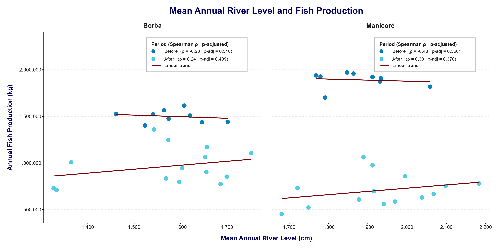
EN: Correlation between the mean annual river level of the Madeira River and annual fish production in Borba and Manicoré during the (Before) period (2002–2010; \(n=9\) years) and the (After) period (2011–2024; \(n=14\) years). Points represent annual observations, and lines indicate linear trends fitted separately for each period and included only as a visual aid. The \(\rho\) values correspond to Spearman’s correlation, and the \(p\)-values displayed in the boxes were adjusted using the Benjamini–Hochberg (BH) method.

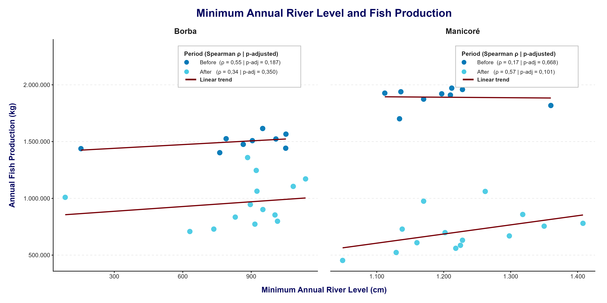
EN: Correlation between the minimum annual river level of the Madeira River and annual fish production in Borba and Manicoré during the (Before) period (2002–2010; \(n=9\) years) and the (After) period (2011–2024; \(n=14\) years). Points represent annual observations, and lines indicate linear trends fitted separately for each period and included only as a visual aid. The \(\rho\) values correspond to Spearman’s correlation, and the \(p\)-values displayed in the boxes were adjusted using the Benjamini–Hochberg (BH) method.

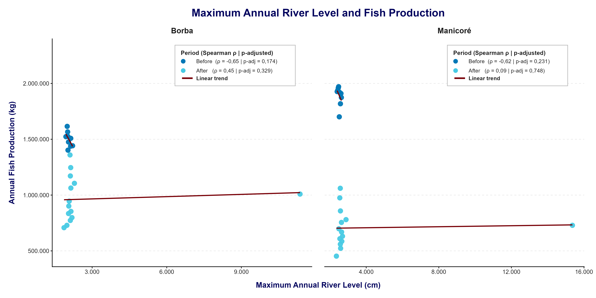
EN: Correlation between the maximum annual river level of the Madeira River and annual fish production in Borba and Manicoré during the (Before) period (2002–2010; \(n=9\) years) and the (After) period (2011–2024; \(n=14\) years). Points represent annual observations, and lines indicate linear trends fitted separately for each period and included only as a visual aid. The \(\rho\) values correspond to Spearman’s correlation, and the \(p\)-values displayed in the boxes were adjusted using the Benjamini–Hochberg (BH) method.

Comentários: As Figura 7, Figura 8 e Figura 9 permitem visualizar os padrões indicados pelos coeficientes de correlação de Spearman.
Em Borba, as cotas média e máxima apresentam correlação negativa com a produção no período (Antes), enquanto a cota mínima apresenta correlação positiva. No período (Depois), as três correlações apresentam direção positiva.
Em Manicoré, as cotas média e máxima também apresentam correlação negativa no período (Antes), enquanto a cota mínima apresenta correlação positiva. No período (Depois), as três correlações são positivas, com maior intensidade para a cota mínima anual.
Apesar das diferenças observadas na direção e na intensidade das correlações entre os períodos, nenhuma permaneceu estatisticamente significativa após o ajuste dos valores de \(p\).
3.5 Variáveis Hidrológicas: Síntese dos Resultados
A análise descritiva mostrou valores centrais das medidas hidrológicas ligeiramente maiores no período (Depois) em Borba e Manicoré. As maiores variações relativas foram observadas para a cota máxima anual em Borba (\(+4,68\%\)) e para a amplitude anual em Manicoré (\(+5,24\%\)).
A análise de correlação de Spearman mostrou diferenças na direção e na intensidade das correlações entre as cotas e a produção pesqueira nos períodos (Antes) e (Depois). Entretanto, após o ajuste para comparações múltiplas, não foram identificadas correlações estatisticamente significativas.
Na etapa seguinte, a relação entre as variáveis hidrológicas e a produção pesqueira será avaliada por meio de modelos de Mínimos Quadrados Generalizados (GLS), permitindo considerar simultaneamente o período, a tendência temporal e a possível autocorrelação das observações.
3.6 Variáveis Hidrológicas: Modelo de Mínimos Quadrados Generalizados (GLS)
Para complementar a análise de correlação, foram ajustados modelos de Mínimos Quadrados Generalizados (GLS) com o objetivo de avaliar a relação entre as cotas fluviométricas e a produção pesqueira, considerando simultaneamente o período e a tendência temporal. Os modelos foram ajustados separadamente para Borba e Manicoré e para as cotas média, mínima e máxima anuais.
Para cada variável hidrológica, considerou-se o modelo:
\[ P_t = \beta_0 + \beta_1 H_t + \beta_2 D_t + \beta_3(H_t \times D_t) + \beta_4 T_t + \varepsilon_t, \]
em que \(P_t\) representa a produção pesqueira anual, \(H_t\) corresponde à variável hidrológica, \(D_t\) representa o período, tendo (Antes) como categoria de referência, e \(T_t\) representa a tendência temporal. A variável hidrológica foi centralizada em torno de sua média.
Nesse modelo, \(\beta_1\) representa a relação entre a variável hidrológica e a produção pesqueira no período (Antes), \(\beta_2\) representa o efeito do período (Depois), \(\beta_3\) representa a mudança na relação entre a variável hidrológica e a produção no período (Depois), e \(\beta_4\) representa a tendência temporal da produção.
Para considerar a possível dependência entre observações consecutivas, foram comparados modelos com erros independentes e modelos com estrutura autorregressiva de primeira ordem, AR(1). A estrutura AR(1) apresentou melhor ajuste nos seis modelos avaliados e, portanto, foi adotada nos modelos finais.
| Município | Variável hidrológica | Efeito hidrológico (Antes) \(\hat{\beta}_1\) (IC95%; kg/cm) |
Teste de \(\beta_1\) \(t\) (\(p\)) |
Efeito do período \(\hat{\beta}_2\) (IC95%; kg) |
Teste de \(\beta_2\) \(t\) (\(p\)) |
Interação Hidrologia × Período \(\hat{\beta}_3\) (IC95%; kg/cm) |
Teste de \(\beta_3\) \(t\) (\(p_{aj}\)) |
Efeito do tempo \(\hat{\beta}_4\) (IC95%; kg/ano) |
Teste de \(\beta_4\) \(t\) (\(p\)) |
\(\phi\) AR(1) |
|---|---|---|---|---|---|---|---|---|---|---|
| Borba | Cota média anual | 39,8 [−175,0; 255,0] | 0,39 (0,702) | −7.095 [−68.019; 53.830] | −0,25 (0,809) | −71,4 [−309,0; 166,0] | −0,63 (0,536) | −42.414 [−49.698; −35.130] | −12,2 (<0,001) | 0,851 |
| Cota mínima anual | 19,5 [−28,5; 67,4] | 0,85 (0,405) | −5.146 [−63.933; 53.641] | −0,18 (0,856) | −33,7 [−100,0; 32,9] | −1,06 (0,453) | −42.176 [−49.552; −34.800] | −12,0 (<0,001) | 0,867 | |
| Cota máxima anual | 120,0 [−82,6; 323,0] | 1,24 (0,229) | −59.254 [−168.355; 49.848] | −1,14 (0,269) | −120,0 [−323,0; 83,1] | −1,24 (0,453) | −42.458 [−49.380; −35.537] | −12,9 (<0,001) | 0,846 | |
| Manicoré | Cota média anual | 159,0 [−66,7; 385,0] | 1,48 (0,156) | −626.979 [−709.842; −544.117] | −15,9 (<0,001) | −219,0 [−481,0; 43,7] | −1,75 (0,211) | −42.670 [−51.699; −33.640] | −9,93 (<0,001) | 0,828 |
| Cota mínima anual | 149,0 [−95,6; 394,0] | 1,28 (0,216) | −612.834 [−695.880; −529.788] | −15,5 (<0,001) | −240,0 [−567,0; 87,2] | −1,54 (0,211) | −42.867 [−52.614; −33.120] | −9,24 (<0,001) | 0,849 | |
| Cota máxima anual | 112,0 [−220,0; 444,0] | 0,71 (0,486) | −675.971 [−891.923; −460.019] | −6,58 (<0,001) | −112,0 [−444,0; 220,0] | −0,71 (0,486) | −43.023 [−52.654; −33.393] | −9,39 (<0,001) | 0,832 |
Notas: \(\hat{\beta}_1\) = efeito da variável hidrológica no período (Antes) | \(\hat{\beta}_2\) = efeito do período (Depois) em relação ao período (Antes), considerando a variável hidrológica em seu valor centralizado | \(\hat{\beta}_3\) = interação entre a variável hidrológica e o período | \(\hat{\beta}_4\) = efeito temporal anual | IC95% = intervalo de confiança de 95% | \(p_{aj}\) = valor de \(p\) da interação ajustado pelo método de Benjamini–Hochberg (BH) considerando as três variáveis hidrológicas em cada município | \(\phi\) = parâmetro de autocorrelação da estrutura AR(1).
Comentários: Conforme a Tabela 12, não foi identificada relação estatisticamente significativa entre as variáveis hidrológicas e a produção pesqueira no período (Antes), uma vez que os coeficientes associados às cotas média, mínima e máxima apresentaram \(p>0,05\) em Borba e Manicoré. Os respectivos intervalos de confiança também incluíram o valor zero.
O termo de interação Hidrologia × Período, utilizado para verificar se a relação entre as cotas e a produção pesqueira se modificou no período (Depois), também não apresentou significância estatística. Em Borba, os valores ajustados de \(p\) foram 0,536 para a cota média e 0,453 para as cotas mínima e máxima. Em Manicoré, os valores foram 0,211 para as cotas média e mínima e 0,486 para a cota máxima. Dessa forma, os modelos não apresentaram evidência de mudança significativa na relação entre as variáveis hidrológicas e a produção pesqueira entre os períodos (Antes) e (Depois).
O efeito do período apresentou comportamento distinto entre os municípios. Em Borba, não foram observadas diferenças significativas entre os períodos após o controle pelas variáveis hidrológicas e pela tendência temporal. Em Manicoré, por outro lado, o efeito associado ao período (Depois) foi negativo e estatisticamente significativo nos três modelos (\(p<0,001\)), indicando menor nível de produção pesqueira nesse período após o ajuste pelos demais termos do modelo.
O efeito do tempo foi negativo e estatisticamente significativo em todos os modelos (\(p<0,001\)). Em Borba, as estimativas variaram de aproximadamente −42,2 a −42,5 mil kg por ano, enquanto em Manicoré variaram de aproximadamente −42,7 a −43,0 mil kg por ano. Assim, independentemente da variável hidrológica considerada, os modelos identificaram uma tendência temporal de redução da produção pesqueira.
3.6.1 Diagnóstico dos Modelos GLS
A adequação dos modelos foi avaliada a partir da normalidade dos resíduos, da presença de autocorrelação residual, da homogeneidade das variâncias e da multicolinearidade entre os termos explicativos.
| Município | Variável hidrológica | Shapiro–Wilk \(p\) |
Ljung–Box \(p\) |
Homogeneidade \(p\) |
VIF máximo |
|---|---|---|---|---|---|
| Borba | Cota média anual | 0,756 | 0,145 | 0,806 | 7,47 |
| Cota mínima anual | 0,798 | 0,085 | 0,598 | 3,76 | |
| Cota máxima anual | 0,939 | 0,137 | 0,416 | 1.562,0 | |
| Manicoré | Cota média anual | 0,596 | 0,323 | 0,301 | 5,56 |
| Cota mínima anual | 0,760 | 0,204 | 0,258 | 4,78 | |
| Cota máxima anual | 0,239 | 0,137 | 0,276 | 3.339,0 |
Notas: Shapiro–Wilk = teste de normalidade dos resíduos | Ljung–Box = teste de autocorrelação residual | Homogeneidade = comparação com modelo permitindo variâncias distintas entre os períodos | VIF = fator de inflação da variância.
Comentários: Conforme a Tabela 13, os resíduos dos seis modelos não apresentaram evidências de desvio da normalidade, uma vez que todos os valores de \(p\) do teste de Shapiro–Wilk foram superiores a 0,05. Os testes de Ljung–Box também apresentaram \(p>0,05\), não indicando autocorrelação residual significativa após a inclusão da estrutura AR(1).
Da mesma forma, não foram observadas evidências de heterogeneidade das variâncias entre os períodos, pois todos os valores de \(p\) foram superiores a 0,05. Os modelos envolvendo a cota mínima apresentaram valores de VIF inferiores a 5, enquanto os modelos da cota média apresentaram valores moderadamente elevados. Para a cota máxima, os valores de VIF foram elevados, indicando maior colinearidade entre os termos desses modelos e, portanto, necessidade de maior cautela na interpretação individual de seus coeficientes.
De forma geral, os diagnósticos residuais apresentaram comportamento adequado quanto à normalidade, homogeneidade das variâncias e autocorrelação residual.
3.7 Variáveis Hidrológicas: Síntese dos Resultados
A análise descritiva mostrou valores centrais das medidas hidrológicas ligeiramente maiores no período (Depois) nos dois municípios. Em Borba, a maior variação relativa foi observada para a cota máxima anual (\(+4,68\%\)), enquanto em Manicoré a maior variação ocorreu na amplitude anual (\(+5,24\%\)).
A análise de correlação de Spearman não identificou correlações estatisticamente significativas entre a produção pesqueira e as cotas média, mínima ou máxima anuais após o ajuste para comparações múltiplas. Embora tenham sido observadas diferenças na direção e na intensidade das correlações entre os períodos, essas diferenças não apresentaram evidência estatística suficiente.
Os modelos GLS apresentaram resultado semelhante em relação às variáveis hidrológicas. Não foram identificadas relações significativas entre as cotas e a produção no período (Antes), nem evidências de que essas relações tenham se modificado no período (Depois), conforme indicado pelos termos de interação Hidrologia × Período.
Por outro lado, a tendência temporal apresentou efeito negativo e estatisticamente significativo em todos os modelos. Além disso, em Manicoré foi identificado efeito negativo significativo associado ao período (Depois), mesmo após o controle pela tendência temporal e pelas variáveis hidrológicas.
Em conjunto, os resultados indicam que, para as medidas hidrológicas avaliadas e no período analisado, não houve evidência estatística de uma correlação consistente entre as variações anuais das cotas fluviométricas e a produção pesqueira, nem de mudança significativa nessa relação entre os períodos (Antes) e (Depois). A redução da produção apresentou-se de forma mais consistente associada à tendência temporal, com efeito adicional do período (Depois) em Manicoré.
4 Séries temporais
Objetivo: Detectar mudanças nas séries temporais da produção pesqueira e das cotas fluviométricas.
4.1 Produção Pesqueira: Mudanças na Série Temporal
Para avaliar as mudanças na trajetória temporal da produção pesqueira, foram ajustados modelos de Mínimos Quadrados Generalizados (GLS) separadamente para Borba e Manicoré. O modelo considerou a tendência temporal, o período de barramento e a interação entre tempo e período, permitindo avaliar tanto mudanças no nível da produção quanto alterações em sua tendência ao longo dos anos.
O modelo utilizado foi:
\[ P_t = \beta_0 + \beta_1T_t + \beta_2D_t + \beta_3(T_t \times D_t) + \varepsilon_t, \]
em que \(P_t\) representa a produção pesqueira anual, em kg, no ano \(t\); \(T_t\) representa o tempo, centralizado em 2011; e \(D_t\) representa o período, assumindo valor 0 para (Antes), de 2002 a 2010, e 1 para (Depois), de 2011 a 2024.
Nesse modelo, \(\beta_1\) representa a tendência temporal da produção no período (Antes), \(\beta_2\) representa a mudança de nível no início do período (Depois), e \(\beta_3\) representa a mudança da inclinação da série entre os dois períodos. A tendência temporal no período (Depois) é obtida pela soma \(\beta_1+\beta_3\).
Para considerar a dependência entre observações anuais consecutivas, foram comparados modelos com erros independentes e modelos com estrutura autorregressiva de primeira ordem, AR(1). Em ambos os municípios, a estrutura AR(1) apresentou melhor ajuste e foi utilizada nos modelos finais.
| Município | AIC Independente | AIC AR(1) | LRT \(p\) |
\(\phi\) AR(1) |
|---|---|---|---|---|
| Borba | 549 | 537 | <0,001 | 0,832 |
| Manicoré | 564 | 556 | 0,002 | 0,843 |
Notas: AIC = Critério de Informação de Akaike | LRT = teste da razão de verossimilhanças | \(\phi\) = parâmetro de autocorrelação da estrutura AR(1) | Valores menores de AIC indicam melhor ajuste relativo.
Comentários: Conforme a Tabela 14, a estrutura AR(1) apresentou menor AIC nos dois municípios e melhora estatisticamente significativa em relação ao modelo com erros independentes. Os valores de \(\phi\) foram 0,832 em Borba e 0,843 em Manicoré, evidenciando elevada dependência temporal positiva entre observações anuais consecutivas.
4.1.1 Resultados dos Modelos GLS
| Município | Tendência (Antes) \(\hat{\beta}_1\) (IC95%; kg/ano) |
Teste de \(\beta_1\) \(t\) (\(p\)) |
Mudança de nível (Depois) \(\hat{\beta}_2\) (IC95%; kg) |
Teste de \(\beta_2\) \(t\) (\(p\)) |
Mudança da tendência \(\hat{\beta}_3\) (IC95%; kg/ano) |
Teste de \(\beta_3\) \(t\) (\(p\)) |
Tendência (Depois) \(\hat{\beta}_1+\hat{\beta}_3\) (IC95%; kg/ano) |
Teste \(t\) (\(p\)) |
|---|---|---|---|---|---|---|---|---|
| Borba | −29.865 [−43.305; −16.426] | −4,65 (<0,001) | −20.272 [−75.197; 34.652] | −0,77 (0,449) | −19.537 [−38.154; −919] | −2,20 (0,041) | −49.402 [−58.391; −40.413] | −11,50 (<0,001) |
| Manicoré | −34.794 [−55.568; −14.020] | −3,51 (0,002) | −616.532 [−699.828; −533.235] | −15,50 (<0,001) | −12.307 [−41.114; 16.500] | −0,89 (0,382) | −47.101 [−61.104; −33.098] | −7,04 (<0,001) |
Notas: \(\hat{\beta}_1\) = tendência temporal no período (Antes) | \(\hat{\beta}_2\) = mudança de nível no início do período (Depois) | \(\hat{\beta}_3\) = mudança da inclinação da série entre os períodos | \(\hat{\beta}_1+\hat{\beta}_3\) = tendência temporal estimada no período (Depois) | IC95% = intervalo de confiança de 95% | Antes = 2002–2010 | Depois = 2011–2024.
Comentários: Conforme a Tabela 15, a produção pesqueira já apresentava tendência temporal negativa e estatisticamente significativa no período (Antes) nos dois municípios. Em Borba, a redução estimada foi de 29.865 kg/ano (\(p<0,001\)), enquanto em Manicoré foi de 34.794 kg/ano (\(p=0,002\)).
No período (Depois), a tendência permaneceu negativa e estatisticamente significativa, com redução estimada de 49.402 kg/ano em Borba e 47.101 kg/ano em Manicoré, ambas com \(p<0,001\).
Em Borba, a mudança da tendência foi negativa e estatisticamente significativa (\(\hat{\beta}_3=-19.537\) kg/ano; \(p=0,041\)), indicando intensificação da taxa anual de redução da produção no período (Depois). A mudança de nível, por outro lado, não foi significativa (\(p=0,449\)).
Em Manicoré, a mudança da tendência não apresentou significância estatística (\(p=0,382\)), não havendo evidência suficiente de alteração da inclinação entre os períodos. Entretanto, foi identificada uma mudança negativa e estatisticamente significativa no nível da produção no início do período (Depois), estimada em −616.532 kg (\(p<0,001\)).
4.1.2 Verificação dos Pressupostos
A adequação dos modelos finais foi avaliada pela normalidade dos resíduos, autocorrelação residual e homogeneidade das variâncias.
| Município | Shapiro–Wilk \(W\) |
Shapiro–Wilk \(p\) |
ACF Lag 1 |
Ljung–Box \(p\) |
Homogeneidade \(p\) |
Maior resíduo | \(|r|>2\) |
|---|---|---|---|---|---|---|---|
| Borba | 0,976 | 0,836 | 0,240 | 0,219 | 0,234 | 2,66 | 1 |
| Manicoré | 0,930 | 0,108 | 0,307 | 0,116 | 0,308 | 2,29 | 2 |
Notas: Shapiro–Wilk = teste de normalidade dos resíduos | ACF Lag 1 = autocorrelação residual de primeira ordem | Ljung–Box = teste de autocorrelação residual | Homogeneidade = comparação com modelo permitindo variâncias distintas entre os períodos | \(|r|>2\) = número de resíduos normalizados com valor absoluto superior a 2.
Comentários: Os testes de Shapiro–Wilk não indicaram desvios significativos da normalidade dos resíduos em Borba (\(p=0,836\)) ou Manicoré (\(p=0,108\)). Os testes de Ljung–Box também apresentaram \(p>0,05\), não indicando autocorrelação residual significativa após a inclusão da estrutura AR(1).
Não foram observadas evidências de heterogeneidade das variâncias entre os períodos, com \(p=0,234\) em Borba e \(p=0,308\) em Manicoré. Foram identificados poucos resíduos normalizados com valor absoluto superior a 2, correspondendo a uma observação em Borba e duas em Manicoré. De forma geral, os diagnósticos indicaram comportamento adequado dos resíduos para os modelos ajustados.
4.1.3 Tendência Não Paramétrica da Produção Total
Como análise complementar aos modelos GLS, foram aplicados o teste de Mann–Kendall e o estimador de inclinação de Sen separadamente aos períodos (Antes) e (Depois). O teste de Mann–Kendall permite avaliar a direção e a significância da tendência monotônica, enquanto a inclinação de Sen fornece uma estimativa robusta de sua magnitude anual.
| Município | Período | \(n\) | \(\tau\) de Kendall | \(\tau^2\) | \(p\)-valor | Sen’s Slope (kg/ano) |
Tendência |
|---|---|---|---|---|---|---|---|
| Borba | Antes | 9 | −0,889 | 0,790 | 0,001 | −24.536,5 | Queda significativa |
| Depois | 14 | −1,000 | 1,000 | <0,001 | −45.674,8 | Queda significativa | |
| Manicoré | Antes | 9 | −0,833 | 0,694 | 0,003 | −21.000,0 | Queda significativa |
| Depois | 14 | −1,000 | 1,000 | <0,001 | −33.500,0 | Queda significativa |
Notas: \(n\) = número de anos avaliados | \(\tau\) = coeficiente \(\tau\) de Kendall | \(\tau^2\) = medida aproximada da intensidade da tendência monotônica | Sen’s Slope = estimativa robusta da taxa anual de variação da produção pesqueira | Antes = 2002–2010 | Depois = 2011–2024.
Comentários: A análise não paramétrica confirmou tendência de redução da produção nos dois municípios e nos dois períodos. Em Borba, a inclinação de Sen passou de −24.536,5 kg/ano no período (Antes) para −45.674,8 kg/ano no período (Depois). Em Manicoré, as estimativas foram de −21.000,0 e −33.500,0 kg/ano, respectivamente.
Os resultados de Mann–Kendall e da inclinação de Sen são consistentes com os modelos GLS ao indicar redução contínua da produção pesqueira. O GLS, entretanto, permite adicionalmente testar formalmente a ocorrência de mudanças no nível ou na inclinação das séries entre os períodos.
4.1.4 Representação Gráfica da Produção Total
As Figura 10 e Figura 11 apresentam a evolução anual da produção pesqueira nos dois municípios. As linhas em vermelho escuro representam as tendências estimadas pela inclinação de Sen em cada período, enquanto a linha vertical tracejada indica o início do período (Depois), em 2011.
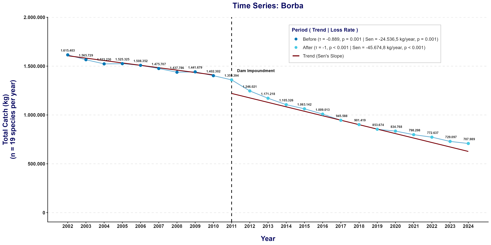
EN: Time series of annual fish production in Borba between 2002 and 2024. Points represent observed annual production, divided into the Before (2002–2010; dark blue) and After (2011–2024; light blue) periods. The dashed vertical line indicates 2011, and the dark-red lines represent trends estimated using Sen’s slope for each period. Legend values correspond to Kendall’s \(\tau\), its associated \(p\)-value, and Sen’s slope expressed in kg/year.

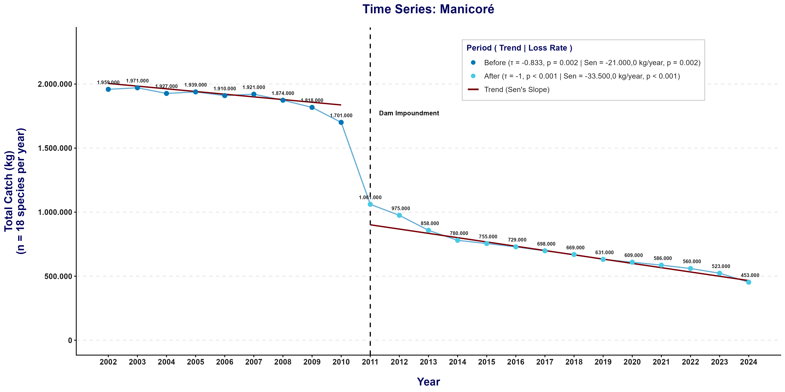
EN: Time series of annual fish production in Manicoré between 2002 and 2024. Points represent observed annual production, divided into the Before (2002–2010; dark blue) and After (2011–2024; light blue) periods. The dashed vertical line indicates 2011, and the dark-red lines represent trends estimated using Sen’s slope for each period. Legend values correspond to Kendall’s \(\tau\), its associated \(p\)-value, and Sen’s slope expressed in kg/year.

4.2 Produção Pesqueira por Espécie: Tendência Temporal
A tendência temporal da produção pesqueira também foi avaliada individualmente para cada espécie, separando-se os períodos (Antes), de 2002 a 2010, e (Depois), de 2011 a 2024. Para essa análise, foram utilizados o teste não paramétrico de Mann–Kendall e o estimador de inclinação de Sen.
O coeficiente \(\tau\) de Kendall indica a direção e a intensidade da tendência monotônica, enquanto a inclinação de Sen fornece uma estimativa robusta da magnitude da variação anual da produção, expressa em kg/ano. Valores negativos indicam redução ao longo do tempo e valores positivos indicam aumento.
4.2.1 Borba
| Espécie | \(\tau\) (Antes) | \(\tau^2\) | \(p\) | Sen (Antes) kg/ano |
\(\tau\) (Depois) | \(\tau^2\) | \(p\) | Sen (Depois) kg/ano |
|---|---|---|---|---|---|---|---|---|
| Aracu | 0,333 | 0,111 | 0,251 | 105,96 | −0,978 | 0,957 | <0,001 | −452,00 |
| Branquinha | −0,056 | 0,003 | 0,917 | −9,19 | −1,000 | 1,000 | <0,001 | −3.627,33 |
| Caparari | −0,778 | 0,605 | 0,005 | −834,33 | −0,978 | 0,957 | <0,001 | −3.242,20 |
| Cara branco | −0,778 | 0,605 | 0,005 | −1.181,74 | −1,000 | 1,000 | <0,001 | −1.134,56 |
| Carauaçu | −0,889 | 0,790 | 0,001 | −592,75 | −1,000 | 1,000 | <0,001 | −938,00 |
| Curimatã | −0,556 | 0,309 | 0,048 | −690,42 | −0,994 | 0,989 | <0,001 | −6.412,27 |
| Dourada | −0,389 | 0,151 | 0,175 | −208,73 | −0,978 | 0,957 | <0,001 | −2.056,50 |
| Filhote | −0,389 | 0,151 | 0,175 | −1.619,17 | −1,000 | 1,000 | <0,001 | −6.358,00 |
| Jaraqui | −0,944 | 0,892 | <0,001 | −6.054,00 | −0,934 | 0,872 | <0,001 | −4.704,00 |
| Matrinxã | −0,889 | 0,790 | 0,001 | −385,45 | −1,000 | 1,000 | <0,001 | −3.378,56 |
| Pacu | −0,944 | 0,892 | <0,001 | −5.303,88 | −0,978 | 0,957 | <0,001 | −847,40 |
| Pescada | −0,722 | 0,522 | 0,009 | −171,51 | −0,912 | 0,832 | <0,001 | −105,50 |
| Piranambu/Barbado | 0,611 | 0,373 | 0,029 | 74,77 | −0,978 | 0,957 | <0,001 | −80,00 |
| Pirapitinga | −0,611 | 0,373 | 0,029 | −1.254,55 | −1,000 | 1,000 | <0,001 | −1.661,00 |
| Pirarara | 0,333 | 0,111 | 0,251 | 67,72 | −0,978 | 0,957 | <0,001 | −1.514,45 |
| Sardinha | −0,667 | 0,444 | 0,016 | −2.478,33 | −1,000 | 1,000 | <0,001 | −1.993,57 |
| Surubim | −0,833 | 0,694 | 0,002 | −584,88 | −1,000 | 1,000 | <0,001 | −4.604,00 |
| Tambaqui | −0,556 | 0,309 | 0,048 | −1.580,54 | −0,956 | 0,914 | <0,001 | −1.669,46 |
| Tucunaré | −1,000 | 1,000 | <0,001 | −381,94 | −1,000 | 1,000 | <0,001 | −531,50 |
Notas: Antes = 2002–2010 (\(n=9\)) | Depois = 2011–2024 (\(n=14\)) | \(\tau\) = coeficiente de Kendall | \(\tau^2\) = intensidade aproximada da tendência monotônica | \(p\) = valor de \(p\) do teste de Mann–Kendall | Sen = inclinação de Sen, expressa em kg/ano | Nível de significância: \(\alpha=0,05\).
Comentários: Conforme a Tabela 18, no período (Antes), 13 das 19 espécies apresentaram tendência significativa de redução, enquanto Aracu, Branquinha, Dourada, Filhote e Pirarara não apresentaram tendência estatisticamente significativa. Piranambu/Barbado foi a única espécie com tendência positiva significativa nesse período (\(\tau=0,611\); \(p=0,029\)), com aumento estimado de 74,77 kg/ano.
No período (Depois), o padrão tornou-se mais homogêneo: todas as 19 espécies apresentaram tendências negativas e estatisticamente significativas (\(p<0,001\)). Os valores de \(\tau\) variaram de −0,912 a −1,000, indicando forte predominância de redução monotônica da produção ao longo dos anos.
4.2.2 Manicoré
| Espécie | \(\tau\) (Antes) | \(\tau^2\) | \(p\) | Sen (Antes) kg/ano |
\(\tau\) (Depois) | \(\tau^2\) | \(p\) | Sen (Depois) kg/ano |
|---|---|---|---|---|---|---|---|---|
| Aracu | −0,650 | 0,422 | 0,028 | −450,00 | −0,628 | 0,394 | 0,005 | −166,67 |
| Branquinha | −0,354 | 0,125 | 0,239 | −500,00 | −0,994 | 0,989 | <0,001 | −2.600,00 |
| Caparari | −0,236 | 0,056 | 0,454 | −375,00 | −1,000 | 1,000 | <0,001 | −2.000,00 |
| Cara branco | −0,817 | 0,667 | 0,003 | −1.000,00 | −0,961 | 0,923 | <0,001 | −500,00 |
| Carauaçu | −0,464 | 0,216 | 0,123 | −333,33 | −0,938 | 0,879 | <0,001 | −400,00 |
| Curimatã | −0,114 | 0,013 | 0,752 | −625,00 | −1,000 | 1,000 | <0,001 | −4.000,00 |
| Dourada | −0,514 | 0,265 | 0,073 | −761,90 | −0,978 | 0,957 | <0,001 | −2.500,00 |
| Filhote | −0,592 | 0,350 | 0,036 | −1.500,00 | −1,000 | 1,000 | <0,001 | −2.500,00 |
| Jaraqui | −0,817 | 0,667 | 0,003 | −5.333,33 | −1,000 | 1,000 | <0,001 | −4.166,67 |
| Matrinxã | −0,609 | 0,371 | 0,034 | −1.500,00 | −1,000 | 1,000 | <0,001 | −2.500,00 |
| Pacu | −0,857 | 0,735 | 0,002 | −2.000,00 | −0,928 | 0,862 | <0,001 | −2.714,29 |
| Pescada | −0,748 | 0,560 | 0,010 | −500,00 | −0,669 | 0,447 | 0,003 | −125,00 |
| Pirapitinga | −0,704 | 0,496 | 0,012 | −1.200,00 | −0,966 | 0,934 | <0,001 | −714,29 |
| Pirarara | −0,611 | 0,373 | 0,029 | −2.000,00 | −0,928 | 0,862 | <0,001 | −2.875,00 |
| Sardinha | −0,611 | 0,373 | 0,029 | −2.550,00 | −1,000 | 1,000 | <0,001 | −2.500,00 |
| Surubim | −0,611 | 0,373 | 0,029 | −1.500,00 | −1,000 | 1,000 | <0,001 | −2.500,00 |
| Tambaqui | −0,889 | 0,790 | 0,001 | −2.000,00 | −0,656 | 0,431 | 0,002 | −500,00 |
| Tucunaré | −0,366 | 0,134 | 0,208 | −675,00 | −0,961 | 0,923 | <0,001 | −500,00 |
Notas: Antes = 2002–2010 (\(n=9\)) | Depois = 2011–2024 (\(n=14\)) | \(\tau\) = coeficiente de Kendall | \(\tau^2\) = intensidade aproximada da tendência monotônica | \(p\) = valor de \(p\) do teste de Mann–Kendall | Sen = inclinação de Sen, expressa em kg/ano | Nível de significância: \(\alpha=0,05\).
Comentários: Conforme a Tabela 19, no período (Antes), 12 das 18 espécies apresentaram tendência negativa e estatisticamente significativa. Branquinha, Caparari, Carauaçu, Curimatã, Dourada e Tucunaré não apresentaram evidência estatística de tendência nesse período.
No período (Depois), todas as 18 espécies apresentaram tendência significativa de redução. Os valores de \(\tau\) variaram de −0,628, para Aracu, a −1,000 para diferentes espécies, confirmando que o padrão de queda esteve amplamente distribuído entre os recursos pesqueiros avaliados.
4.2.3 Síntese das Tendências por Espécie
| Município | Período | Espécies avaliadas | Queda significativa | Aumento significativo | Sem tendência significativa |
|---|---|---|---|---|---|
| Borba | Antes | 19 | 13 | 1 | 5 |
| Borba | Depois | 19 | 19 | 0 | 0 |
| Manicoré | Antes | 18 | 12 | 0 | 6 |
| Manicoré | Depois | 18 | 18 | 0 | 0 |
Comentários: A Tabela 20 evidencia uma mudança no padrão geral das séries. No período (Antes), embora a maioria das espécies já apresentasse redução significativa, ainda foram observadas séries sem tendência estatisticamente significativa nos dois municípios e uma tendência positiva em Borba. No período (Depois), entretanto, 100% das espécies avaliadas apresentaram tendência significativa de queda, correspondendo às 19 espécies de Borba e às 18 espécies de Manicoré.
Esse resultado mostra que a redução observada na produção pesqueira total não se restringiu a poucas espécies, mas ocorreu de forma generalizada entre os táxons avaliados no período (Depois).
4.2.4 Representação Gráfica das Séries por Espécie
Os gráficos a seguir apresentam as séries temporais anuais da produção pesqueira de cada espécie em Borba e Manicoré. As cores distinguem os municípios e os períodos (Antes) e (Depois), enquanto as linhas em vermelho escuro representam as tendências estimadas pela inclinação de Sen. A linha vertical tracejada indica o início do período (Depois), em 2011.


4.2.5 Síntese das Séries Temporais por Espécie
A análise por espécie mostrou que o declínio temporal da produção não ocorreu de maneira uniforme no período (Antes). Em Borba, 13 das 19 espécies já apresentavam redução significativa, cinco não apresentavam tendência estatisticamente detectável e Piranambu/Barbado apresentou aumento significativo. Em Manicoré, 12 das 18 espécies apresentavam queda significativa, enquanto seis permaneceram sem tendência estatisticamente significativa.
No período (Depois), o comportamento tornou-se mais consistente entre as espécies. Todas as 19 espécies avaliadas em Borba e todas as 18 espécies avaliadas em Manicoré apresentaram tendências temporais negativas e estatisticamente significativas.
Dessa forma, a redução identificada na produção pesqueira total também foi observada de forma generalizada nas séries temporais das espécies no período (Depois), embora as magnitudes das inclinações de Sen tenham variado entre os recursos pesqueiros e entre os municípios.
4.3 Cotas Fluviométricas: Mudanças nas Séries Temporais
Para avaliar possíveis mudanças temporais no regime hidrológico, foram analisadas as séries anuais das cotas média, mínima e máxima em Borba e Manicoré, considerando os períodos (Antes), de 2002 a 2010, e (Depois), de 2011 a 2024. Para cada variável e município, foi ajustado um modelo de Mínimos Quadrados Generalizados (GLS), permitindo avaliar a tendência temporal em cada período, a mudança de nível e a mudança da inclinação da série.
O modelo utilizado foi:
\[ H_t = \beta_0 + \beta_1T_t + \beta_2D_t + \beta_3(T_t \times D_t) + \varepsilon_t, \]
em que \(H_t\) representa a cota fluviométrica anual no ano \(t\); \(T_t\) representa o tempo, centralizado em 2011; e \(D_t\) representa o período, assumindo valor 0 para (Antes) e 1 para (Depois). Nesse modelo, \(\beta_1\) representa a tendência temporal no período (Antes), \(\beta_2\) representa a mudança de nível no início do período (Depois), e \(\beta_3\) representa a mudança da inclinação entre os períodos. A tendência temporal no período (Depois) é obtida pela soma \(\beta_1+\beta_3\).
4.3.1 Estrutura de Correlação dos Modelos
Inicialmente, foram comparados modelos com erros independentes e modelos com estrutura autorregressiva de primeira ordem, AR(1), de modo a verificar a necessidade de considerar dependência entre observações anuais consecutivas.
| Município | Variável | AIC Independente | AIC AR(1) | LRT \(p\) |
Estrutura final |
|---|---|---|---|---|---|
| Borba | Cota média | 289 | 290 | 0,492 | Independente |
| Cota mínima | 328 | 329 | 0,510 | Independente | |
| Cota máxima | 421 | 423 | 0,641 | Independente | |
| Manicoré | Cota média | 292 | 293 | 0,409 | Independente |
| Cota mínima | 273 | 275 | 0,921 | Independente | |
| Cota máxima | 436 | 438 | 0,620 | Independente |
Notas: AIC = Critério de Informação de Akaike | LRT = teste da razão de verossimilhanças | AR(1) = estrutura autorregressiva de primeira ordem | Valores menores de AIC indicam melhor ajuste relativo.
Comentários: Conforme a Tabela 21, a inclusão da estrutura AR(1) não proporcionou melhora significativa em nenhuma das seis séries avaliadas (\(p>0,05\)). Além disso, os modelos com erros independentes apresentaram menores valores de AIC. Dessa forma, a estrutura independente foi mantida nos modelos finais de cota média, mínima e máxima em ambos os municípios.
4.3.2 Resultados dos Modelos GLS
| Município | Variável | Parâmetro | Estimativa [IC95%] | \(t\) (\(p\)) |
|---|---|---|---|---|
| Borba | Cota média | Tendência (Antes) | 6,60 [−24,35; 37,56] | 0,45 (0,660) |
| Mudança de nível (Depois) | 37,52 [−174,91; 249,96] | 0,37 (0,716) | ||
| Mudança da tendência | −18,97 [−53,77; 15,82] | −1,14 (0,268) | ||
| Tendência (Depois) | −12,37 [−28,27; 3,52] | −1,63 (0,120) | ||
| Borba | Cota mínima | Tendência (Antes) | −39,80 [−111,79; 32,19] | −1,16 (0,262) |
| Mudança de nível (Depois) | 298,18 [−195,85; 792,21] | 1,26 (0,222) | ||
| Mudança da tendência | 27,76 [−53,17; 108,69] | 0,72 (0,482) | ||
| Tendência (Depois) | −12,04 [−49,01; 24,93] | −0,68 (0,504) | ||
| Borba | Cota máxima | Tendência (Antes) | 18,73 [−530,60; 568,07] | 0,07 (0,944) |
| Mudança de nível (Depois) | 1.088,10 [−2.681,79; 4.857,98] | 0,60 (0,553) | ||
| Mudança da tendência | −92,69 [−710,23; 524,85] | −0,31 (0,757) | ||
| Tendência (Depois) | −73,96 [−356,07; 208,16] | −0,55 (0,590) | ||
| Manicoré | Cota média | Tendência (Antes) | 13,23 [−19,91; 46,38] | 0,84 (0,414) |
| Mudança de nível (Depois) | 81,62 [−145,84; 309,09] | 0,75 (0,462) | ||
| Mudança da tendência | −27,51 [−64,77; 9,75] | −1,55 (0,139) | ||
| Tendência (Depois) | −14,27 [−31,30; 2,75] | −1,76 (0,095) | ||
| Manicoré | Cota mínima | Tendência (Antes) | 4,08 [−17,68; 25,85] | 0,39 (0,699) |
| Mudança de nível (Depois) | 95,00 [−54,35; 244,34] | 1,33 (0,199) | ||
| Mudança da tendência | −17,24 [−41,70; 7,23] | −1,47 (0,157) | ||
| Tendência (Depois) | −13,15 [−24,33; −1,98] | −2,46 (0,023) | ||
| Manicoré | Cota máxima | Tendência (Antes) | 18,10 [−739,89; 776,09] | 0,05 (0,961) |
| Mudança de nível (Depois) | 1.507,52 [−3.694,28; 6.709,32] | 0,61 (0,551) | ||
| Mudança da tendência | −110,94 [−963,05; 741,16] | −0,27 (0,788) | ||
| Tendência (Depois) | −92,84 [−482,11; 296,43] | −0,50 (0,623) |
Notas: Tendência (Antes) = variação anual estimada entre 2002 e 2010 | Mudança de nível (Depois) = alteração estimada no nível da série no início do período 2011–2024 | Mudança da tendência = diferença entre as inclinações dos períodos | Tendência (Depois) = variação anual estimada entre 2011 e 2024 | IC95% = intervalo de confiança de 95% | Tendências expressas em cm/ano e mudanças de nível em cm.
Comentários: Conforme a Tabela 22, em Borba não foram identificadas tendências temporais estatisticamente significativas para as cotas média, mínima ou máxima em nenhum dos períodos. Também não foram encontradas evidências de mudanças significativas de nível ou da inclinação das séries entre (Antes) e (Depois).
Em Manicoré, as cotas média e máxima também não apresentaram tendências significativas nos períodos analisados. Para a cota mínima, entretanto, foi identificada tendência negativa e estatisticamente significativa no período (Depois), com redução estimada de 13,15 cm/ano (IC95%: −24,33; −1,98; \(p=0,023\)).
Apesar dessa redução no período (Depois), o termo de interação entre tempo e período não foi significativo (\(p=0,157\)). Portanto, não há evidência estatística suficiente de que a inclinação da cota mínima tenha se alterado significativamente entre os períodos (Antes) e (Depois).
4.3.3 Verificação dos Pressupostos
A adequação dos modelos foi avaliada por meio da normalidade dos resíduos, autocorrelação residual e homogeneidade das variâncias.
| Município | Variável | Shapiro–Wilk \(p\) |
ACF Lag 1 | Ljung–Box \(p\) |
Homogeneidade \(p\) |
Maior resíduo | \(|r|>2\) |
|---|---|---|---|---|---|---|---|
| Borba | Cota média | 0,474 | 0,135 | 0,347 | 0,051 | 2,18 | 1 |
| Cota mínima | <0,001 | −0,137 | 0,681 | 0,963 | 3,27 | 2 | |
| Cota máxima | <0,001 | −0,099 | 0,876 | <0,001 | 4,59 | 1 | |
| Manicoré | Cota média | 0,828 | 0,164 | 0,143 | 0,158 | 2,08 | 1 |
| Cota mínima | 0,868 | 0,020 | 0,116 | 0,745 | 2,08 | 1 | |
| Cota máxima | <0,001 | −0,105 | 0,869 | <0,001 | 4,59 | 1 |
Notas: Shapiro–Wilk = teste de normalidade dos resíduos | ACF Lag 1 = autocorrelação residual de primeira ordem | Ljung–Box = teste de autocorrelação residual | Homogeneidade = comparação entre o modelo com variância constante e o modelo permitindo variâncias distintas entre os períodos | \(|r|>2\) = número de resíduos normalizados com valor absoluto superior a 2.
Comentários: Os testes de Ljung–Box não indicaram autocorrelação residual significativa em nenhuma das séries (\(p>0,05\)), resultado coerente com a seleção dos modelos com estrutura independente.
Para as cotas médias de Borba e Manicoré e para a cota mínima de Manicoré, não foram identificadas violações relevantes dos pressupostos avaliados. A cota mínima de Borba apresentou desvio da normalidade dos resíduos (\(p<0,001\)), acompanhado de dois resíduos normalizados com valor absoluto superior a 2.
As séries de cota máxima apresentaram os maiores desvios dos pressupostos, com rejeição da normalidade e evidência de heterogeneidade das variâncias em ambos os municípios (\(p<0,001\)). Os resultados dessas séries devem, portanto, ser interpretados com cautela, especialmente devido à presença de valores anuais extremos observados na série.
4.3.4 Tendência Não Paramétrica das Cotas Fluviométricas
Como análise complementar, foram aplicados o teste de Mann–Kendall e o estimador de inclinação de Sen separadamente aos períodos (Antes) e (Depois). O teste de Mann–Kendall foi utilizado para avaliar a presença de tendência monotônica, enquanto a inclinação de Sen foi utilizada para estimar a magnitude da variação anual.
| Município | Variável | Período | \(n\) | \(\tau\) | \(\tau^2\) | \(p\) | Sen (cm/ano) |
Tendência |
|---|---|---|---|---|---|---|---|---|
| Borba | Cota média | Antes | 9 | 0,167 | 0,028 | 0,602 | 8,75 | Sem tendência significativa |
| Depois | 14 | −0,143 | 0,020 | 0,511 | −5,38 | Sem tendência significativa | ||
| Cota mínima | Antes | 9 | −0,389 | 0,151 | 0,175 | −37,88 | Sem tendência significativa | |
| Depois | 14 | −0,231 | 0,053 | 0,274 | −16,00 | Sem tendência significativa | ||
| Cota máxima | Antes | 9 | 0,556 | 0,309 | 0,048 | 20,42 | Aumento significativo | |
| Depois | 14 | −0,319 | 0,102 | 0,125 | −12,60 | Sem tendência significativa | ||
| Manicoré | Cota média | Antes | 9 | 0,222 | 0,049 | 0,466 | 13,77 | Sem tendência significativa |
| Depois | 14 | −0,253 | 0,064 | 0,228 | −16,79 | Sem tendência significativa | ||
| Cota mínima | Antes | 9 | −0,167 | 0,028 | 0,602 | −4,12 | Sem tendência significativa | |
| Depois | 14 | −0,429 | 0,184 | 0,037 | −12,17 | Queda significativa | ||
| Cota máxima | Antes | 9 | 0,389 | 0,151 | 0,175 | 16,90 | Sem tendência significativa | |
| Depois | 14 | −0,055 | 0,003 | 0,827 | −4,29 | Sem tendência significativa |
Notas: \(n\) = número de anos avaliados | \(\tau\) = coeficiente de Kendall | \(\tau^2\) = medida aproximada da intensidade da tendência monotônica | \(p\) = valor de \(p\) do teste de Mann–Kendall | Sen = inclinação de Sen, expressa em cm/ano | Antes = 2002–2010 | Depois = 2011–2024 | Nível de significância: \(\alpha=0,05\).
Comentários: A análise não paramétrica indicou ausência de tendência significativa na maior parte das séries hidrológicas. Em Borba, a única exceção foi a cota máxima no período (Antes), que apresentou tendência positiva (\(\tau=0,556\); \(p=0,048\)), com inclinação de Sen estimada em 20,42 cm/ano. Entretanto, diante dos desvios observados nos diagnósticos da série de cotas máximas, esse resultado deve ser interpretado com cautela.
Em Manicoré, a cota mínima apresentou tendência negativa significativa no período (Depois) (\(\tau=-0,429\); \(p=0,037\)), com redução estimada de 12,17 cm/ano pela inclinação de Sen. Esse resultado é consistente com o modelo GLS, que estimou redução de 13,15 cm/ano para a mesma série e período.
4.3.5 Representação Gráfica das Séries Hidrológicas
As séries temporais das cotas média, mínima e máxima são apresentadas nas figuras a seguir. Os pontos representam os valores anuais observados, diferenciados entre os períodos (Antes) e (Depois). A linha vertical tracejada indica o ano de 2011 e as linhas em vermelho escuro representam as tendências estimadas pela inclinação de Sen em cada período.
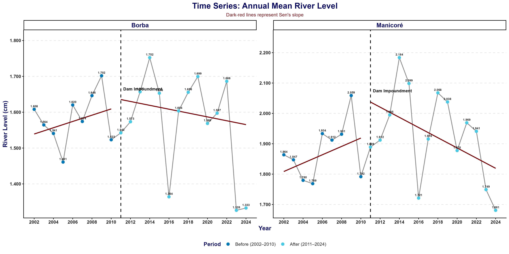
EN: Time series of annual mean river level of the Madeira River in Borba and Manicoré between 2002 and 2024. Points represent annual observed values in the Before (2002–2010; dark blue) and After (2011–2024; light blue) periods. The dashed vertical line indicates the beginning of the After period in 2011, while dark-red lines represent trends estimated using Sen’s slope for each period.

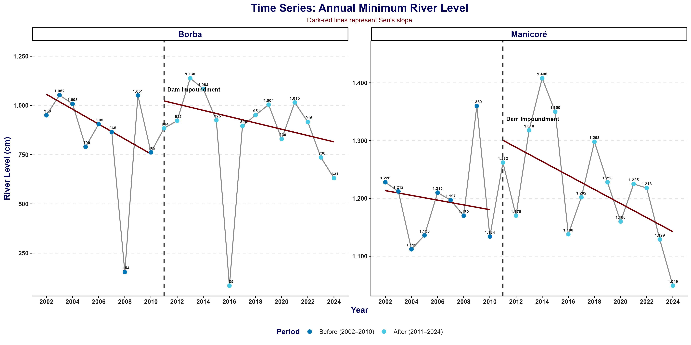
EN: Time series of annual minimum river level of the Madeira River in Borba and Manicoré between 2002 and 2024. Points represent annual observed values in the Before (2002–2010; dark blue) and After (2011–2024; light blue) periods. The dashed vertical line indicates the beginning of the After period in 2011, while dark-red lines represent trends estimated using Sen’s slope for each period.

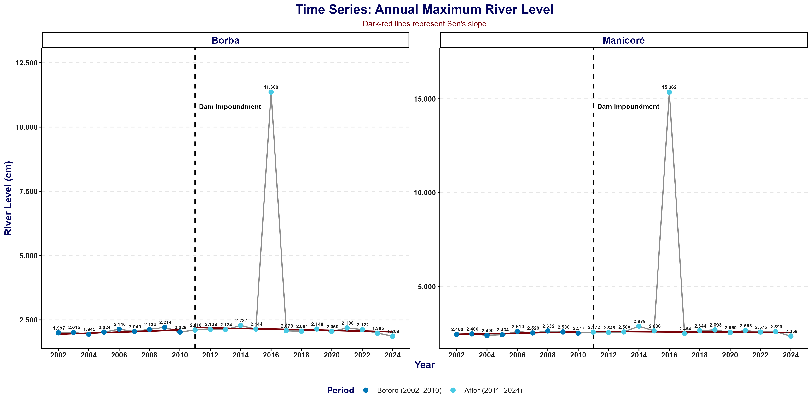
EN: Time series of annual maximum river level of the Madeira River in Borba and Manicoré between 2002 and 2024. Points represent annual observed values in the Before (2002–2010; dark blue) and After (2011–2024; light blue) periods. The dashed vertical line indicates the beginning of the After period in 2011, while dark-red lines represent trends estimated using Sen’s slope for each period.

4.4 Séries Temporais: Síntese dos Resultados
A análise das séries temporais revelou comportamentos distintos entre a produção pesqueira e as variáveis hidrológicas. A produção pesqueira apresentou tendência de redução em Borba e Manicoré tanto no período (Antes) quanto no período (Depois), resultado observado pelos modelos GLS e corroborado pelos testes de Mann–Kendall e pelas inclinações de Sen.
Em Borba, além das tendências negativas nos dois períodos, o modelo GLS identificou mudança significativa da inclinação da série, indicando intensificação da taxa anual de redução da produção no período (Depois). Em Manicoré, não foi identificada mudança significativa da inclinação, porém ocorreu uma redução significativa do nível da produção entre os segmentos temporais.
A análise individual por espécie reforçou esse padrão. No período (Antes), 13 das 19 espécies de Borba e 12 das 18 espécies de Manicoré apresentaram tendências significativas de redução. Em Borba, cinco espécies não apresentaram tendência significativa e Piranambu/Barbado apresentou tendência positiva. Em Manicoré, seis espécies permaneceram sem tendência significativa. No período (Depois), entretanto, todas as 19 espécies avaliadas em Borba e todas as 18 espécies avaliadas em Manicoré apresentaram tendências negativas e estatisticamente significativas.
As variáveis hidrológicas apresentaram comportamento temporal menos uniforme. Não foram encontradas evidências de mudanças significativas de nível ou da inclinação das cotas média, mínima ou máxima entre os períodos nos dois municípios. A principal alteração identificada ocorreu na cota mínima de Manicoré, que apresentou tendência significativa de redução no período (Depois), resultado observado tanto pelo GLS quanto pelo teste de Mann–Kendall.
Em conjunto, os resultados indicam que o declínio temporal da produção pesqueira foi mais amplo e consistente do que as mudanças observadas nas cotas fluviométricas analisadas. Embora tenham sido identificadas alterações pontuais nas séries hidrológicas, os resultados não demonstraram uma mudança generalizada das tendências de cota entre os períodos (Antes) e (Depois).
5 Apêndices
Nesta seção, apresentamos os detalhamentos metodológicos, as demonstrações algébricas, as formulações matemáticas dos testes estatísticos e os materiais complementares que fundamentam os resultados apresentados ao longo deste documento.
Taxa de Declínio Produtivo
Representa a redução percentual da produção pesqueira média anual (em kg) entre os períodos “Antes” (2002 a 2010) e “Depois” (2011 a 2024) da instalação das UHEs, compondo os resultados descritivos da Tabela 3 e sendo calculada pela seguinte fórmula geral:
\[ \Delta P = \left( \frac{ \bar{X}_{\text{Antes}} - \bar{X}_{\text{Depois}} }{ \bar{X}_{\text{Antes}} } \right) \times 100 \]
Os cálculos específicos para cada município, utilizando as médias anuais exatas da série histórica, são apresentados a seguir:
Borba
\[ \small \Delta P_{\text{Borba}} = \left( \frac{ 1.499.501 - 964.113 }{ 1.499.501 } \right) \times 100 = 35{,}7\% \]
Manicoré
\[ \small \Delta P_{\text{Manicoré}} = \left( \frac{ 1.891.111 - 706.214 }{ 1.891.111 } \right) \times 100 = 62{,}7\% \]
Shapiro-Wilk
Verifica se uma amostra pode ser considerada proveniente de uma distribuição normal. Sua estatística de teste é \(W\), e ele é indicado para amostras pequenas, como as deste estudo (9 e 14 anos). Um \(p\)-valor maior que \(\alpha\) indica que não há evidência contra a normalidade. As hipóteses são:
- \(H_0\): os dados seguem uma distribuição normal;
- \(H_1\): os dados não seguem uma distribuição normal.
Anderson-Darling
Também avalia a normalidade dos dados, com estatística de teste \(A\). Ele dá mais peso aos valores extremos da distribuição e, por isso, foi utilizado de forma complementar ao de Shapiro-Wilk. As hipóteses são:
- \(H_0\): os dados seguem uma distribuição normal;
- \(H_1\): os dados não seguem uma distribuição normal.
T de Welch para amostras independentes
Compara as médias de dois grupos independentes. Exige que os dados de cada grupo sejam normais, mas não exige que as variâncias sejam iguais. Sua estatística de teste é \(t\), e ele foi utilizado quando os dois períodos atenderam à normalidade. As hipóteses são:
- \(H_0\): \(\mu_{\text{Antes}} = \mu_{\text{Depois}}\) (as médias dos dois períodos são iguais);
- \(H_1\): \(\mu_{\text{Antes}} \neq \mu_{\text{Depois}}\) (as médias dos dois períodos são diferentes).
Wilcoxon-Mann-Whitney para amostras independentes
Compara dois grupos independentes a partir da ordenação (postos) das observações, sem exigir normalidade. Sua estatística de teste é \(W\), e ele foi utilizado quando ao menos um período não atendeu à normalidade. As hipóteses são:
- \(H_0\): os dois períodos têm a mesma distribuição de produção;
- \(H_1\): os dois períodos têm distribuições de produção diferentes.
Métricas de Alteração da Composição das Capturas
As alterações na composição das capturas pesqueiras foram descritas a partir de três medidas complementares: a variação percentual da captura média anual de cada espécie, sua participação relativa na produção pesqueira total de cada ano e a mudança dessa participação entre os períodos (Antes) e (Depois). Essas medidas fundamentam os resultados apresentados na Tabela 5.
5.0.1 Variação percentual da captura por espécie
A variação percentual da captura representa a mudança relativa na captura média anual de cada espécie entre os períodos (Antes) e (Depois), sendo calculada por:
\[ V_i = \left( \frac{ \bar{X}_{i,\text{Depois}} - \bar{X}_{i,\text{Antes}} }{ \bar{X}_{i,\text{Antes}} } \right) \times 100, \]
em que \(\bar{X}_{i,\text{Antes}}\) e \(\bar{X}_{i,\text{Depois}}\) representam, respectivamente, as capturas médias anuais da espécie \(i\) nos períodos (Antes) e (Depois).
Valores negativos indicam redução da captura média anual, enquanto valores positivos indicam aumento.
Como exemplo, para o Filhote em Borba:
\[ \small V_{\text{Filhote}} = \left( \frac{ 69.911 - 141.030 }{ 141.030 } \right) \times 100 = -50{,}43\%. \]
Portanto, a captura média anual do Filhote foi aproximadamente 50,43% menor no período (Depois).
Para a Dourada em Manicoré:
\[ \small V_{\text{Dourada}} = \left( \frac{ 64.285{,}71 - 105.777{,}78 }{ 105.777{,}78 } \right) \times 100 = -39{,}23\%. \]
Assim, a captura média anual da Dourada apresentou redução de aproximadamente 39,23%.
5.0.2 Participação relativa anual das espécies
A participação relativa indica quanto cada espécie representa da produção pesqueira total registrada em determinado município e ano.
Para a espécie \(i\), no ano \(t\), foi calculada por:
\[ p_{it} = \left( \frac{ X_{it} }{ X_{\cdot t} } \right) \times 100, \]
em que \(X_{it}\) corresponde à captura da espécie \(i\) no ano \(t\) e \(X_{\cdot t}\) representa a captura total de todas as espécies registradas no mesmo município e ano.
Dessa forma, uma participação de 10%, por exemplo, indica que a espécie respondeu por 10% de toda a produção pesqueira registrada naquele ano.
Após o cálculo das participações anuais, foi obtida a participação média de cada espécie dentro de cada período:
\[ \bar{p}_{i,j} = \frac{1}{n_j} \sum_{t=1}^{n_j} p_{it}, \]
em que \(j\) representa o período (Antes) ou (Depois), e \(n_j\) corresponde ao número de anos pertencentes ao respectivo período.
Assim:
\[ n_{\text{Antes}}=9 \qquad\text{e}\qquad n_{\text{Depois}}=14. \]
Portanto, a participação média apresentada na Tabela 5 corresponde à média das participações relativas anuais da espécie, e não à simples razão entre duas médias de captura.
5.0.3 Mudança na participação relativa
A alteração na composição foi quantificada pela diferença entre a participação média da espécie no período (Depois) e sua participação média no período (Antes):
\[ \Delta p_i = \bar{p}_{i,\text{Depois}} - \bar{p}_{i,\text{Antes}}. \]
Como ambas as medidas são percentuais, essa diferença é expressa em pontos percentuais (p.p.).
Valores positivos indicam ganho de participação relativa na composição das capturas, enquanto valores negativos indicam perda de participação.
Como exemplo, para o Filhote em Borba:
\[ \small \Delta p_{\text{Filhote}} = 7{,}01 - 9{,}41 = -2{,}40\text{ p.p.} \]
Portanto, além da redução de 50,43% na captura média anual, o Filhote perdeu aproximadamente 2,40 pontos percentuais de participação na composição das capturas.
Por outro lado, para a Dourada em Borba:
\[ \small \Delta p_{\text{Dourada}} = 8{,}92 - 7{,}01 = +1{,}91\text{ p.p.} \]
Embora sua captura média anual tenha apresentado redução de 19,68%, sua participação relativa aumentou em aproximadamente 1,91 ponto percentual. Esse resultado ocorre porque a mudança na composição depende da participação da espécie na produção total, e não apenas da alteração de sua captura absoluta.
Da mesma forma, para a Dourada em Manicoré:
\[ \small \Delta p_{\text{Dourada}} = 9{,}22 - 5{,}60 = +3{,}62\text{ p.p.} \]
Nesse caso, embora a captura média anual tenha diminuído 39,23%, a espécie aumentou sua participação relativa na composição das capturas em aproximadamente 3,62 pontos percentuais.